生成时间：2026-10-08T11:42:14+08:00
今日保留论文数：17
内容构成：今日新文 17 篇；补充推荐 1 篇；经典旧文精读 0 篇
阅读分层：重点精读 4 篇；相关简报 14 篇。精读依据科学贡献筛选，简报保留方法、结论及局限。
补充推荐论文数：1
数据源警告
- 本次有 1 个数据源访问异常；完整错误已保留在运行日志中，日报只显示摘要。
- 其他来源：1 个异常。
- 主要错误类型：其他 1 次。
高能天体物理重点
1. Gamma-rays from black hole coronae: disentangling the leptonic and hadronic contributions
- 来源：arXiv / astro-ph.HE
- 链接：https://arxiv.org/abs/2610.09676
- 作者：Sébastien Le Bihan, Daniel Grošelj, Martin Lemoine
- 公告 / 来源日期：2026-10-08
- 阅读层级：重点精读
- 评分：novelty 8/10，importance 8/10，relevance 10/10，final 9.70/10
- 推荐理由：自洽连接冕区非热电子和强子级联，直接改变MeV伽马作为中微子诊断的解释。
中文题目：黑洞冕区的MeV光子来自谁：非热电子会掩盖强子级联信号
做了什么：活动星系核的冕区若产生TeV中微子，伴随高能光子会在致密光场中被吸收并级联到MeV波段。但电子也会被湍流中的重联电流片加速，直接产生非热康普顿尾。本文用粒子网格模拟所启发的电子谱，结合Turb-AM3对质子、次级粒子和辐射的演化，以NGC 4151检验两条通道能否从能谱区分。作者以Fermi-LAT约束为强子归一化上边界，并非用MeV检出反推唯一质子功率。
结果是：只要非热电子携带约5%以上的电子动能，轻子分量就可能达到COSI两年灵敏度，而本模型最大强子级联仍低于该灵敏度；两者的区分更多依赖约10 MeV至亚GeV的谱形。相似电子分布还能解释宇宙0.1—1 MeV背景和Cyg X-1硬态尾部，但这些是条件一致性检验，不是对冕区起源的唯一证明。
为什么重要：这项工作的推进在于拆开了“中微子源应有MeV伴随辐射”和“测到MeV就是测到强子”两个命题。前者由能量级联支持，后者会被初级非热电子破坏。将电子加速的动力学依据纳入同一辐射计算后，未来MeV观测更直接检验电子尾和湍流供能，而对质子的推断仍需中微子及更高能伽马约束。
理论 / 观测 / 仪器方法价值：可复用的方法是先固定硬X射线康普顿输出，再比较电子谱族和质子级联的变化，避免把不同X射线背景下的两套模型机械相加。质子从湍流取得能量时反过来阻尼湍流，限制其功率；同时显式改变电子对负载，观察固定光深下靶质子密度怎样改变。适用时必须有源尺度、软光子场、长期X射线谱及同口径伽马上限。
为什么应该关注：对中微子和IACT研究，MAGIC上限与LAT低能约束共同限制透明区和不透明冕区的分工；MeV观测若成功，也不能自动外推到可见TeV辐射。值得后续跟踪的是NGC 4151的GeV成分是否受邻源污染或超快外流贡献，以及MeV谱在不同X射线状态下的响应。只有区分这些成分，才能把非热粒子能量预算用于跨信使比较。
展开详细解读：文章讲解、背景、理论、重点章节、图表与相关工作
文章详细讲解
科学问题。 质子产生中微子时也产生电磁次级粒子，在紧致冕区内，高能光子反复转化为电子对，电子对再辐射，最终在较低能量逃逸。问题不是有没有级联，而是它在总MeV通量中占多少。初级电子来自冕区本身，次级电子来自强子相互作用；二者都能辐射相似能段，因此必须比较同一环境中的完整能量分布。
作者怎么做。 作者采用单区冕，固定来自盘的软光子供给，考察纯热、直接取自辐射PIC模拟、以及热分布平滑接幂律的三类初级电子谱。质子通过湍流随机加速，Turb-AM3同步处理相互作用、逃逸和次级级联，并把质子获得的功率反馈到湍流能谱。固定康普顿参数使不同电子处方产生近似相同硬X射线形状，再在MeV处比较额外尾部，从而把问题集中到粒子族而非X射线基线差异。
关键结果。 在NGC 4151设定下，取无电子对负载的强子模型使其接近LAT约束，已经是有利于强子发光的保守上包络；仍无法达到图2给出的COSI两年灵敏度。PIC电子谱本身的辐射到约10 MeV都可超过强子分量，更一般的高截断电子谱在非热能量分数约5%以上时也可被COSI探测。临界交叉能量随电子分数、电子对负载变化，不是普适的固定100 MeV；正文还指出极端最大强子情形可早到数MeV交叉。
局限和下一步。 PIC模拟采用质量比144、二维空间三维速度，并未同时模拟成对产生和湮灭；作者据此外推真实冕区谱，而不是完成了真实质量比的三维第一性原理预测。NGC 4151的中微子证据在引言所用工作中是试验前3.1σ，不能与NGC 1068的试验后4.2σ并列写成相同强度发现。接下来应联合状态分辨X射线、MeV谱和中微子数据限制谱族，并检验GeV污染、外流贡献与单区近似。
关键结果是怎么做出来的
第一步先看图1的电子谱，不要直接看最终光子曲线。黑虚线是热浴，红线来自PIC，橙带则在更高截断下扫描非热能量分数。PIC尾能量分数约0.43且截断洛伦兹因子约30；参数化谱采用指数3和截断1000，能量分数0.01—0.45。这两类谱不能因都叫“非热”便当成同一注入模型。
第二步建立相同X射线约束下的比较。初级电子假定迅速达稳态，不像质子那样随输运时间演化；作者对每个电子谱调节数密度，使康普顿参数固定。NGC 4151采用黑洞质量约10的7.2次方太阳质量、冕半径15个引力半径、相干尺度4个引力半径、盘光度2×10的43次方erg/s及冕重处理比例0.2。由此硬X射线光度约4×10的42次方erg/s，建立场和靶密度基线。
第三步用LAT约束限定质子加速，而不是自由抬高强子归一化。无电子对负载时使次级伽马饱和GeV约束，等效Alfvén速度约0.26c；该环境中pp较pγ更重要。随后改变负载因子0—20：在相近电子光深下，电子对越多，需要的背景质子越少，pp辐射随之改变。紫带是中微子模型范围，绿带是伴随光子范围，都不是数据拟合后验置信区间。
第四步读图2的COSI相对灵敏度插图。红线和一部分橙带进入可探测区，最大绿带仍不足，说明新增仪器主要能检验电子尾。作者同时列出互有争议的LAT通量及上限，并明确指出超快外流与源污染的可能；因此以LAT定出的强子通量应理解为允许上边界，而不是已经归属冕区的独立测量。
第五步把模型外推到总体和另一质量尺度。图3沿用已有AGN光度函数与吸收种群，先以纯热连续谱复现原背景计算至约10%，再加入2%和7%的电子能量尾；图4对Cyg X-1采用4%尾，能近似解释硬态MeV谱。两者增加模型适用性，但并未联合重新估计所有光度函数误差，Cyg X-1分析还特意不处理偏振，不能据此排除喷流。
展开背景、理论、公式、模型和章节导读
背景知识
吸积盘把引力能转成辐射，其中一部分能量进入盘上方热而稀薄、具有磁场和湍流的冕区。盘提供大量软光子，冕区电子通过逆康普顿散射把它们提升到X射线。纯热电子具有特征温度，高于相应能量的光子数会迅速下降，这就是用硬X射线谱限制电子温度的基本原因。
若少量电子进入远高于热运动的能量尾，即使数量很少，也可以储存可观动能并散射出MeV光子。本文讨论的是非热电子动能占总电子动能的比例，不是非热电子占总粒子数的比例，也不是整个吸积功率的比例。把这些分数混用会造成跨模型能量预算的错误。
质子冷却较慢，可以通过多次随机相互作用从磁湍流持续吸能；与气体或光子碰撞后产生介子，介子衰变给出中微子和电磁次级粒子。中微子容易逃逸，但高能光子会与冕内软光子碰撞产生电子对，故源可以对TeV伽马不透明而对中微子透明。缺少同等级TeV光子不能单独否认中微子产生。
困难在于级联抹去了初始高能光子的部分记忆，逃逸谱又叠加了电子本身的辐射。历史上的混合热—非热冕模型早已允许MeV尾；本文的新意是用近期辐射动力学模拟指导谱族，并与能量守恒的质子加速模型结合。COSI提供低MeV检验窗口，但真正分离两通道还需要覆盖更高的MeV到亚GeV过渡区。
基础理论 / 方法脉络
冕区的紧致度衡量单位尺寸内的辐射功率。当光度高、尺度小时，电子向光子转移能量很快，冷却可短于大涡周转。此时不能简单把质子的慢随机加速机制原样套到电子：电子可能主要在间歇电流片重联时迅速获能，然后立刻冷却。PIC给出的局部俯仰角偏向也支持这一图像，但它仍受数值尺度限制。
磁化参数把磁能密度与粒子静质量能密度相比较。相同磁场和质子密度下，电子质量小得多，电子磁化可高；然而大量电子对会把能量分摊到更多轻子，降低每个轻子的磁化。电子对因而同时影响电子可达能量和pp靶质子密度，是辐射通道之间的耦合变量，而不是一个可任意添加的归一化常数。
电子高能截断由获能、冷却和电流片驻留共同决定。作者估计纯辐射极限允许很高洛伦兹因子，但有限电流片宽度可能更严格，因此选1000作为外推族的截断。这个选择源于电流片统计和尺度推算，不是NGC 4151数据直接测得；原PIC截断约30也不能当真实冕区的硬上限。
质子能量来源则受反作用限制。加速越强，从湍流抽走的功率越多，湍流越被阻尼，进一步加速随之减弱。该自调节使注入压力比超过约0.03后，最终非热质子归一化对初始注入量不再敏感。因此不能只提高质子注入参数去补齐任意MeV通量，还要满足湍流供能以及LAT约束。
公式与推导
下面以论文第二、三节的定义为主，补上能量与观测量之间的教学连接。首先定义尺度
质量取NGC 4151的模型值，长度单位统一后，光穿越时间为$R_c/c$。半径同时决定光子密度、光深和粒子逃逸尺度，不能在改变半径时仍保留全部密度不变。
辐射紧致度为
其中$L$为辐射光度、$\sigma_T$为Thomson截面；分子分母量纲相同。固定光度缩小源会提高紧致度并加快电子冷却，因此下面采用稳态电子谱，而对质子保留时间演化。
论文对磁化和电子对负载的约定给出
$n_e$计入电子与正电子，$n_p$为质子数密度。因而固定光深时增加电子对可降低$n_p$，改变pp效率；这一步连接磁场参数与强子辐射幅度，不能把$Z_\pm$只当电子谱修正。
用连续热分布接高能尾，可将论文采用的高能段写成
这只描述接点以上的参数化尾，并非低能处也使用幂律；热段为Maxwell–Jüttner分布。接点与归一化由连续性和动能分数决定，而不是独立任意指定。
将文中能量分数明确写为积分形式，属于定义的教学展开：
它按动能加权，因而不能等同粒子数比例。本文扫描约0.01至0.45，阈值附近的0.05是在当前光度、谱斜率和仪器灵敏度下得出的条件值。
为比较相同硬X射线基线，作者固定
这里沿用论文定义，不把它与所有教科书采用的非相对论$4\Theta_e\max(\tau,\tau^2)$形式逐字等同。改变尾部时需要调节电子密度，才能避免把总散射能力改变误认成新增非热成分。
质子供能的上边界可由论文湍流能量预算表达为
左侧是单位体积单位时间得到的非热质子功率；右侧由磁能除以涡周转时间得到相同单位。这解释为何注入足够大后归一化会自调节，也解释为何提高注入不能绕过多信使上限。
最后用Thomson区的标准教学标度把电子与光子相接：
$\epsilon_s$是入射软光子能量；离开该条件就需要完整Klein–Nishina核以及级联输运，不能用此式直接拟合本文所有MeV—GeV点。它仅说明少量高能电子为何会把热谱截止延伸到MeV，真正结果来自数值辐射计算。
模型拟合 / 应用方法
输入首先是NGC 4151的盘光度、尺度和长期X射线约束。作者对NuSTAR、INTEGRAL及Swift-BAT作吸收和反射校正，并统一到Swift-BAT长期平均通量，以便与两年COSI灵敏度比较。因此图2不是严格同时的瞬时宽带谱，若研究耀发或状态转变，应重新匹配曝光和时间窗。
接下来固定冕半径、相干长度和注入压力比0.1，调节加速率到无电子对情形下的LAT上包络；再扫描电子对负载及电子尾能量分数。本文主要给出受约束模型族，没有报告对所有这些参数的联合MCMC后验或发现显著性。带宽表示扫描范围，不能据图中色带宽度读出某参数的一倍标准差。
实现上Turb-AM3求解质子、光子、介子、轻子等能量空间输运，并将逆康普顿核扩展到跨相对论能区。初级电子谱作为快速稳态背景输入，次级电子对仍由反应产生。这样的自洽性涵盖耦合辐射与质子反作用，但不等于从吸积磁流体出发同时求出全部几何和初级电子谱。
总体背景检验使用既有光度函数，将原热连续谱替换成含非热尾的冕谱，并以borus02处理环状物质的重处理；恢复原模型到约10%是实现交叉检查，不是对全部观测的误差预算。Cyg X-1附录采用5个引力半径、16太阳质量等该文模型值，未纳入MeV偏振判别。未来比较应同时传播光度函数、吸收、几何及状态分布的不确定性，并以偏振或时间响应检验喷流竞争解释。
重点章节 / 结果段落怎么读
- 第一节：先分清中微子统计口径与伽马不透明条件，避免把源关联强度写成机制确认。
- 第二节A和图1：逐一比较PIC谱、外推谱与纯热谱；抓住能量分数、质量比和维度限制，理解为什么需要谱族。
- 第二节B至第三节：跟踪固定康普顿参数、湍流阻尼及LAT上包络怎样限定强子分量，再读图2的灵敏度插图。
- 第四节及附录A：检查同一谱族用于宇宙背景和Cyg X-1时哪些参数重新设定，哪些竞争机制并未排除。
关键图表与解读
图2
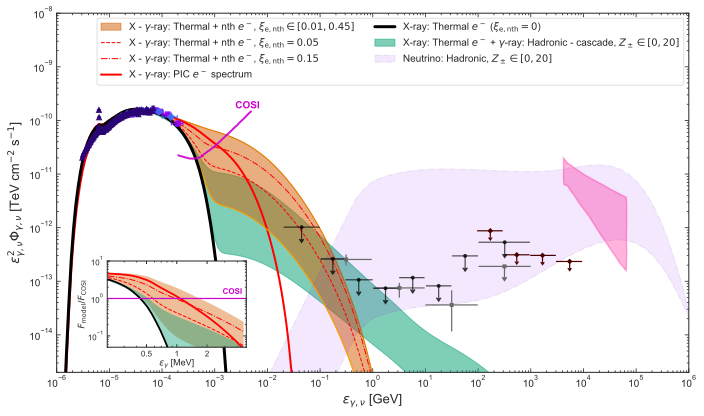
图注：NGC 4151在不同电子模型下的多信使谱能量分布。仅轻子过程（关闭强子过程）：橙带为热电子加非热电子的光子输出，非热动能分数$\xi_{e,\rm nth}=0.01$—$0.45$，红虚线和点划线分别标出0.05和0.15；红实线为PIC电子分布的输出。热电子加强子过程：绿带（光子）和紫带（中微子）覆盖电子对负载$Z_\pm=0$—20，色带高端对应$Z_\pm=0$。插图为各模型通量除以COSI灵敏度。黑线为仅有热电子时的结果。档案X射线数据包括INTEGRAL紫方块、Swift-BAT蓝菱形和NuSTAR深蓝三角，均归一到Swift-BAT；黑箭头和灰方块分别为文中两项研究的Fermi-LAT上限和通量，棕菱形为MAGIC上限，品红区域为IceCube中微子通量估计，粉曲线为COSI两年连续谱灵敏度。
怎么看这张图：先看MeV区橙红曲线相对于粉线的位置，再看更高能绿带；插图直接给出相对灵敏度。色带是模型扫描，不能读作测量置信带；不同LAT结果本身存在归属争议。 直接比较两通道及已知约束，是论文主结果。
来源与置信度：arXiv HTML；source verified；https://arxiv.org/html/2610.09676v1/neutrino_gamma_spectrum_4151_new_new.svg
图3
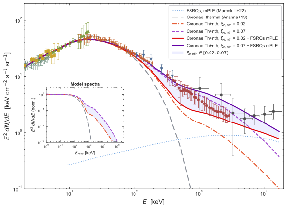
图注：不同冕区非热电子描述下的弥散宇宙X射线背景预测谱形。灰虚线为文献67的纯热预测，蓝点线为文献51的耀变体贡献（mPLE模型）。红、紫虚线沿用文献67的方法并加入非热电子谱，在固定幂律指数$p$时取两个不同的$\xi_{e,\rm nth}$；红、紫实线为冕区与耀变体总和。插图给出每种背景预测使用的源谱。数据取自文献51：Chandra-COSMOS为黄，ASCA为灰，RXTE为绿，Swift-BAT为橙，名古屋气球实验为蓝，SMM为红，COMPTEL为黑。
怎么看这张图：比较灰热模型在0.1—1 MeV的不足与总模型填补的幅度；改善说明总体相容，不证明所有AGN共用一个非热分数。 检验单源电子谱族能否与总体背景兼容。
来源与置信度：arXiv HTML；source verified；https://arxiv.org/html/2610.09676v1/CXB_two_spectra.svg
强相关工作
论文引用的Le Bihan等Turb-AM3冕区工作（arXiv:2603.27749）提供质子随机加速、湍流阻尼和级联耦合框架。本文在该基础上将初级电子从简单热浴扩展到受动力学启发的非热谱，因此不是重新宣布“冕区能产中微子”，而是重新评估其伴随电磁信号能否被电子掩盖。关联范围由本文引用和方法描述核验，未在此声称重跑前作。
Inoue、Totani与Ueda的宇宙MeV背景工作（arXiv:0709.3877）已提出非热冕电子能填补热冕与喷流之间的背景缺口；Nättilä的辐射等离子体模拟（arXiv:2408.08161）则属于粒子分布的物理依据。本文把这些方向与单源多信使边界连接起来，但Cyg X-1喷流解释和NGC 4151外流解释依然是竞争选项，能谱相容不应抹掉它们。
同一事件 / 同类源线索：
相似工作：
基础理论 / 方法工作：
相反观点 / 张力线索：
（未提供）
2. Quasi-periodic eruption spectral-timing: EMRIs crossing warped accretion disks
- 来源：arXiv / astro-ph.HE
- 链接：https://arxiv.org/abs/2610.10110
- 作者：Joheen Chakraborty, Andrew Mummery, Eliot Quataert, Riccardo Arcodia, Itai Linial, Erin Kara
- 公告 / 来源日期：2026-10-08
- 阅读层级：重点精读
- 评分：novelty 8/10，importance 8/10，relevance 9/10，final 9.35/10
- 推荐理由：共享质量自旋盘参数联合QPE时序与SED，明确六模态混叠，显著推进检验而非确认EMRI。
中文题目：把QPE时钟和盘光谱一起拟合：翘曲盘穿越模型仍存在多组轨道解
做了什么：准周期爆发（QPE）是低质量星系核中反复出现的软X射线耀发。一种解释是恒星或紧致伴星在极端质量比轨道上穿越吸积盘，碰撞加热产生爆发；爆发到达时刻记录轨道与进动，静息紫外/X射线谱则记录同一个盘。作者把二者放进共享黑洞质量、自旋和盘几何的模型，对eRO-QPE2和GSN 069联合拟合，检验一套物理系统能否同时满足两类数据。
答案是在所选短期数据上可以，但远未得到唯一轨道：eRO-QPE2有六个近等价模式，GSN 069保留十三个模式。更关键的是，eRO-QPE2再加入约半年后的第五次XMM观测，所有静态模式均失效。因此结果支持继续检验碰撞图像和设计连续观测，不能写成已经确认EMRI或精确测出唯一自旋。
为什么重要：以往单独拟合爆发时刻容易因观测空档漏掉整数周期而选中一个假唯一解。本工作显式搜索采样窗的混叠，并要求静息谱与时序共享物理参数，使模型一致性成为真正可检验的条件。同时长基线失败明确划出稳态近似边界，这比仅报告漂亮的短期拟合更能指导下一步物理建模。
理论 / 观测 / 仪器方法价值：可借鉴的是多观测通道共享参数、逐模态采样以及把系统噪声上限触顶当作模型缺项诊断。时序先在周期和进动周期坐标中求解，再用精确Kerr频率映射到质量、自旋和半长轴；光谱同时限制盘投影面积与温度。迁移到其他周期源时，必须保留采样窗、周期计数和辐射延迟的不确定性。
为什么应该关注：QPE若与极端质量比旋近相关，将为黑洞附近轨道与盘相互作用提供电磁探针；但当前尚无本论文提供的引力波确认。最值得关注的是连续覆盖至少一个近心点进动周期，以及多波段紫外谱对消光的约束。对高能时域研究，这一案例也说明“长期近周期”并不保证长期相干，静态相位折叠可能把轨道演化误吸收到噪声。
展开详细解读：文章讲解、背景、理论、重点章节、图表与相关工作
文章详细讲解
科学问题。 伴星穿盘能够自然产生重复加热，但仅有平均重复周期并不能反推出唯一轨道。相对论使椭圆长轴和轨道平面分别进动，盘本身又可能翘曲，因此同样的几次到达时刻可由不同质量、自旋和几何实现。作者问的是：静息盘的光谱能否排除时序中那些虽拟合好、却不可能产生实际紫外/X射线谱的解？
作者怎么做。 作者采用由内侧自旋对齐向外侧倾斜过渡的准稳态翘曲盘，对每个盘环计算局部法向，求伴星与盘相交的时刻。单圈飞行按Kepler椭圆近似，长时进动使用Kerr测地线频率；静息谱加入盘自照射、遮挡、色温修正与吸收。先利用采样窗枚举混叠模态，再分别用MCMC拟合17个自由参数，避免一条采样链只留在某个局部峰。
关键结果。 eRO-QPE2的30天32次爆发把重复周期限在约8055—8070秒，但仍允许六组近心点进动周期约12—67圈的解，且都能匹配静息谱。GSN 069的160天仅15次爆发，时序解更密集；SED筛掉部分低黑洞质量模式后仍有十三组。加入eRO-QPE2第五次XMM历元，所有解的对数似然至少恶化90，时序系统项达到约3%的先验上限，说明短期成功不能外推到长期。
局限和下一步。 模型不含轨道耗散、盘表面密度演化和外盘随时间对齐，爆发峰值相对穿盘时刻的延迟也只用噪声项表示。作者仅温和偏好近心点进动约67圈的模式，因为其碰撞速度变化较小；若冲击质量或辐射效率也随速度变化，这一偏好会改变。需要连续时序和紫外消光约束，以及含耗散的时变模型，而非把现有多峰后验压成一个中心值加误差。
关键结果是怎么做出来的
第一步核对数据覆盖。eRO-QPE2使用2024年6月28日至7月28日四次XMM观测，辅以NICER/Swift短快照；XMM峰值用不对称Gaussian拟合，统计误差约25—60秒。GSN 069来自三次XMM与一次Chandra，共15次爆发、160天基线。长基线与高信息量不是同义词：空档内未观测的轨道数越多，混叠解反而越多。
第二步确定物理共享量。内盘发出X射线，较外盘贡献紫外；同一个质量和自旋决定引力半径与内稳定轨道，同一翘曲几何又决定伴星穿盘位置。光谱因而不能任意另用一个黑洞质量来修补时序解。作者预计算自照射网格以提高速度，报告谱插值误差低于百分之一，但这只是插值精度，不是整个盘模型的物理精度。
第三步主动找解而非假定单峰。采样时刻的Fourier窗旁瓣给出近心点进动频率的候选混叠，每个候选从多种相位重新优化。eRO-QPE2的六个模式时序对数似然范围约7，最佳数个相差约2；这些数值说明相近拟合度，却不是经证据积分后的模式概率。GSN 069先找到至少18个，联合SED后保留13个并等权组合，因此组合后验带有这一权重约定。
第四步看光谱怎样帮忙、哪里帮不上。eRO-QPE2只有一个紫外点，两个代表模式的去吸收光谱可相差一个数量级，消光约0.14与0.46皆可；观测谱相同并不意味内禀盘光度相同。GSN 069紫外覆盖较好，拿掉SED后质量和半长轴后验分别扩大约34%和39%，显示联合方法在极稀疏时序下的实际作用。
第五步用未被时序强制的物理量交叉检验。六个模式预测不同碰撞相对速度，约67圈模式只变约1.3倍，其余变约2.5—4倍；固定受冲质量和效率时后者对应约7—18倍爆发能量变化，与较稳定爆发性质不易相容。但这两个“固定”是假设，不能将速度稳定性升级为决定性证据。第五历元导致所有静态解失败，则是真正提示必须加入演化的独立边界。
展开背景、理论、公式、模型和章节导读
背景知识
准周期爆发的“准”意味着间隔有结构性变化，不一定是恒定时钟。盘不稳定、轨道碰撞等不同机制都可能产生重复软X射线亮化。碰撞模型的特别预言是爆发时间受轨道进动调制，而且应与静息盘几何相容；要验证它，需要比平均周期更多的可观测量。
极端质量比旋近指恒星质量伴星围绕巨大黑洞运动并缓慢演化的体系。本文把QPE作为这一图像的潜在电磁对应体，研究半长轴几十到数百引力半径处的穿盘。一个轨道通常有两次几何交点，但不一定有两次可见爆发；一圈一个可见爆发是待检验的辐射和可见性假设。
在Newton引力的理想两体问题中，椭圆闭合；相对论会让近心点转动，旋转黑洞还拖曳轨道平面。两种进动时间比轨道周期长，于是到达时刻减去平均周期预报后的残差可以缓慢摆动。若只观测几段短序列，不同摆动频率在这些离散时刻很容易重合。
潮汐瓦解产生的盘可能从一开始就不与黑洞自旋平面对齐。内侧受拖曳和盘内部应力影响趋于对齐，外侧保留较大倾斜，形成翘曲。这样的盘既改变碰撞位置，也改变不同盘环接收内盘照射及朝向观测者的投影面积，正是将光谱与时序联合起来的物理桥梁。
基础理论 / 方法脉络
几何的起点是每个盘环的局部法向，而不是用一张固定倾角平面代替整张盘。给定轨道位置，位置向量与当地盘法向的点积为零便表示穿过盘中面。由于偏心轨道在不同半径交盘，它采样到的局部倾角也可能不同，故倾角函数必须与光谱计算保持同一份定义。
解析时序采取时间尺度分离。单圈中轨道形状近似Kepler椭圆，而圈与圈之间加入精确Kerr频率决定的进动。这不是完整相对论轨迹积分。附录将其有效性与引力半径相对半长轴很小联系，并引用尚在准备中的工作声称亚百分比精度；本日报不把该未公开检验当作已独立复现的证据。
为了把时序约束变成可解释参数，作者以轨道、近心点和节点进动周期作为采样坐标。在弱场下，近心点进动主要定半长轴，节点进动继而约束自旋，轨道周期再定质量；但高自旋时忽略拖曳会造成最高约15%的自旋偏差，因此弱场公式只能给数值反解的初始值。
光谱一侧，盘的局部温度由内部耗散加自照射决定，再积分带色温修正的多温黑体，计入吸收、红化与引力红移。遮住内侧X射线区的几何被排除。对eRO-QPE2，关闭自照射仅使UV下降约1%—13%、光学不到6%，故“有翘曲”不意味着观测光度由再处理主导，更不能自动预言强紫外回声。
公式与推导
从实际交点出发，可把附录A和正文时序模型串成以下推导。盘环法向随半径变化，穿盘条件为
$\mathbf r$是伴星相对黑洞的位置；用单位法向保证$h$有长度量纲。对准稳态翘曲盘，正文式14给局部倾角
$\theta_w$为远处倾角，$r_{\rm warp}$为过渡尺度，两种半径单位必须一致。小半径趋于对齐，大半径趋于外盘倾角，建立几何与SED的共同输入。
展开交点的点积，可以把几何偏移写为
$i$是轨道倾角，$\psi_n$为轨道节点相对盘的相位，$\omega_n$为近心点相位，$f_n$是真近点角。连续跟踪时须保留象限和相位展开；单用主值反正切会丢掉节点转一圈的计数。
再用Kepler飞行时间把角度变为时刻，正文式7—9为
$E_n$是偏近点角，$e$是偏心率；括号无量纲。与圈数线性的项已吸收到参考历表，因此最后的几何项不能重复扣除。模型还另加Rømer和Shapiro传播延迟。
当偏心率小时，展开得到正文式11的直观形式
第一项显示近心点转动如何产生近似正弦残差，第二项是盘—轨道相对节点几何；它一般并非正弦。此近似用于理解振幅，不替代拟合所用的完整Kepler飞行时间。
进动频率把残差连接到黑洞参数。在正文弱场近似中，$a$以引力半径为单位，
两个$N$是进动周期除以轨道周期，自旋$a_\bullet$无量纲。先从残差定两个$N$再求$a$与自旋，最后由$P$求质量；实际反演用精确Kerr频率，避免高自旋近似偏差。
静息谱的桥梁是温度平衡，正文式15给
两项$Q$是单位面积功率；自照射取决于同一翘曲形状和自遮挡。温度随后进入多温黑体积分，质量通过物理面积进入光度，故SED可排除某些时序允许的质量。
统计上共享参数要求联合似然相乘，即
$f_t$是无量纲时序系统项，不能把峰值统计误差当成穿盘物理误差的全部。各Gaussian项保留方差对数归一化，故不能无限放大噪声来得到好拟合。
最后采样窗旁瓣造成正文式20的混叠关系
$\Delta\nu$单位为每圈的频率差；离散观测可能分不清这两个周期。因此一次局部最优不等于全局唯一，需要逐个模态优化并用连续观测打破混叠。
模型拟合 / 应用方法
时序输入是校正到太阳系质心后的爆发峰时及拟合协方差，SED输入是静息UV/X射线通量。两类数据各有额外系统项：时序为周期乘一个固定比例，SED为模型通量乘一个比例。eRO-QPE2唯一UV点不加SED系统项，GSN 069多个UV点则加入；这一处理差异会影响两源通道权重，复用模型时应明确说明。
表1列出17个自由参数。轨道偏心率先验0—0.6、近心点进动10—100圈、节点进动100—30000圈，物理反解须满足黑洞对数质量4—8、自旋0—0.998、半长轴6—800个引力半径，并拒绝遮挡内盘的几何。后验范围不能脱离这些先验，尤其GSN 069自旋和外盘倾角几乎未被数据约束。
搜索先用时序采样窗找别名，再从多个初相位重拟合，最后每个模式独立运行emcee。观测爆发匹配最近预测交点，不事先固定跨空档的整数圈数。多模态联合分布因此不能用单个Gaussian误差概括；GSN 069十三模态等权混合是作者约定，不能把某模式面积直接解释为严格Bayesian证据权重。
诊断必须同时看残差、额外噪声和外推。eRO-QPE2四历元联合拟合时系统项约0.6%—1.7%，第五历元加入后逼近约3%上限且对数似然明显下降，指向缺失演化；两个爆发每轨模型相对一个可见爆发模型的对数似然差约12，只是最大似然比，未计模型体积，不能称为发现显著性或Bayes因子。未来应以含周期导数、盘对齐和冲击辐射延迟的模型重做预测检验。
重点章节 / 结果段落怎么读
- 第二节A及表1：把观测历元、峰时精度和先验分清，理解长空档为何允许多解。
- 第二节B—D与附录A：从盘法向、交点、飞行时间读到Kerr进动；注意精确频率不等于完整相对论轨迹积分。
- 第二节E及图1—3：先找采样窗混叠，再看同一后验样本的光谱与时序；图3的速度只是附加物理诊断。
- 第三节后半及讨论：重点读第五历元失败、GSN 069等权模态和UV消光退化，把成功范围与失败范围放在一起。
关键图表与解读
图1
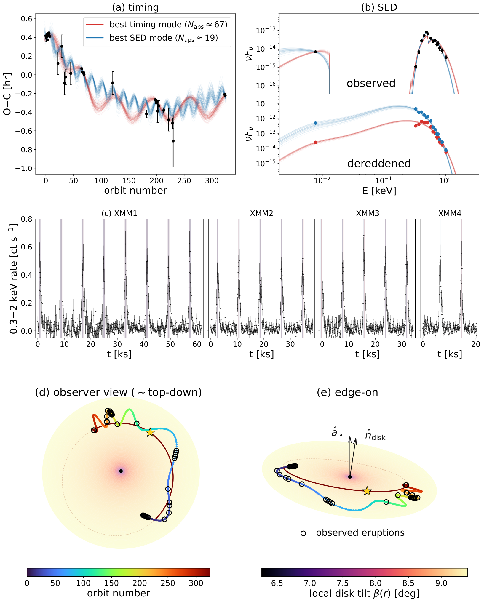
图注：eRO-QPE2最佳时序模式（红）与最佳SED模式（蓝）的联合谱—时序拟合。(a) QPE到达时刻相对线性预报的$O-C$数据，以及各模型的后验抽样轨迹。(b) 用相同抽样得到的静息宽带SED，上方为观测谱，下方为去红化谱；后者将模型的$N_H=E(B-V)=0$，数据用各模式拟合的吸收参数校正。(c) 四次XMM光变曲线，深浅阴影分别表示预测穿盘时刻的68%和95%区间。(d)、(e) 最佳时序模式在XMM1—4观测期（约四分之一节点进动周期）内的翘曲盘几何和交点，分别从模型观测者方向及侧面观看。
怎么看这张图：红蓝两种解都穿过观测点，但去吸收SED不同；空档内的曲线发散体现混叠。不能只截取最佳模式的几何图作为唯一轨道重建。 同一参数同时比较时序、光谱与几何的核心证据。
来源与置信度：arXiv HTML；source verified；https://arxiv.org/html/2610.10110v1/ero2_combined.png
图3
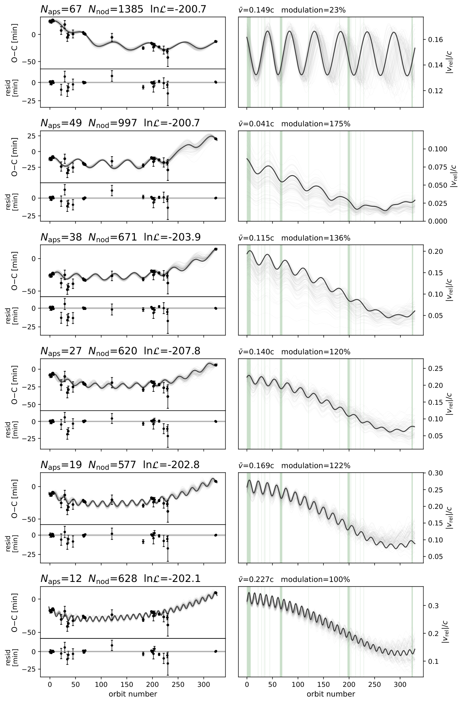
图注：eRO-QPE2的XMM1—4观测期内六种时序模式，按近心点进动圈数$N_{\rm aps}$递减排列。左列为爆发$O-C$图和时序残差，各面板标注该模式的时序对数似然；右列为每次穿盘的极端质量比伴星与盘的预测相对速度，阴影标示观测窗口。六种模式的时序拟合相近（$\Delta\ln\mathcal L\lesssim7$），但第一种、即最大$N_{\rm aps}$模式预测的碰撞运动学最稳定，能与近乎恒定的爆发光度相容。
怎么看这张图：右列比左列提供额外物理区分，但由速度推光度还需假定受冲质量和效率；正文因此仅温和偏好第一模式，不作唯一判决。 展示六模态退化及额外能量学判别的假设边界。
来源与置信度：arXiv HTML；source verified；https://arxiv.org/html/2610.10110v1/ero2_modes.png
强相关工作
Arcodia等对eRO-QPE2超周期的研究（arXiv:2604.09788）提供本文的核心时序资料与轨道模型挑战；Chakraborty等短时标QPE参数推断（arXiv:2508.20162）是QPE-FIT的前序路线。本文的增量是解析加速、系统枚举混叠和联合SED，而不是独立再次测得同一批爆发；数据重叠不能算额外独立支持。
Mummery与Quataert的翘曲潮汐瓦解盘谱研究（arXiv:2609.29787）给出自照射与几何框架。此前刚体进动盘解释（arXiv:2304.00775）与本文静态翘曲盘加轨道进动在短期内可竞争；本文只表明刚体盘进动并非必要，不证明盘永不演化。附录引用的“Collisions with warped disks”仍为准备中工作，相关亚百分比准确性未在本次独立复现。
同一事件 / 同类源线索：
相似工作：
（未提供）
基础理论 / 方法工作：
相反观点 / 张力线索：
3. Changing-look Active Galactic Nuclei from the Dark Energy Spectroscopic Instrument. VII. Testing Disk-Corona Diagnostics with eROSITA
- 来源：arXiv / astro-ph.HE
- 链接：https://arxiv.org/abs/2610.10331
- 作者：Wei-Jian Guo, Shuo Zhai, Zhu-Heng Yao, Huaqing Cheng, Jingwei Hu, Jun-Jie Jin
- 公告 / 来源日期：2026-10-08
- 阅读层级：重点精读
- 评分：novelty 8/10，importance 8/10，relevance 9/10，final 9.35/10
- 推荐理由：对照样本与共享光度协方差拆解吸积V形诊断，能实质纠正常用推断。
中文题目：AGN吸积状态的V形图可能由坐标构造产生：DESI与eROSITA的协方差检验
做了什么：变脸活动星系核会在可观测时间内改变宽发射线及连续谱，常被类比为恒星级黑洞的吸积状态转换。本文检验常用的紫外到X射线相对强度指标与Eddington比的V形关系：当两个坐标共享同一光度时，相关性是否真的意味着盘—冕物理改变？作者将DESI变脸样本与eROSITA匹配，并在红移0.35—0.45构建一致选择的宽Hα和窄线对照群体。
宽线对照也有正相关；对同一批1200个质量较好源，把Eddington比从光学估计换成X射线估计，Spearman系数从0.409变成−0.394，无须改变源的物理状态。独立光学Eddington比与目录能段有效谱指数存在弱正关联，但硬能段结果强依赖零假设和剔除边界拟合的选择。因此本文主要提供诊断方法的边界，未确认或排除AGN中的真实状态转换。
为什么重要：这项研究把“图形像理论预测”推进到“这种图形能否由测量定义自行产生”的检验。相同亮度同时进入横纵坐标，会让总体相关看似很显著；换估计量还能翻转符号。对照样本和同源配对比较说明，V形本身不是变脸特有证据，必须先剥离共享变量和选择效应，再讨论物理机制。
理论 / 观测 / 仪器方法价值：可复用的是冻结样本后只改变估计量、在相同对象上做软硬能段对照、用不同条件零模型检查结论依赖。尤其要区分由目录通量拟合的硬度代理与使用响应矩阵、背景和吸收模型得到的本征谱指数。对多波段统计或中微子—电磁关联，同样应先列出每个派生量依赖哪些原始测量，避免重复使用同一信息。
为什么应该关注：盘—冕状态决定软光子供给和非热粒子环境，但本论文没有测定冕区粒子加速或中微子效率。它直接影响怎样选择值得做高能跟踪的低吸积率和变脸源。下一步应关注同期光学/UV与响应建模的X射线谱，特别是Eddington比低于约千分之一的区间；该区间目前样本不足，不能靠外推本次总体趋势下结论。
展开详细解读：文章讲解、背景、理论、重点章节、图表与相关工作
文章详细讲解
科学问题。 紫外/X射线强度比告诉我们源相对偏向哪一波段，但不直接给出X射线谱形、吸收或盘内结构。若Eddington比也从紫外或X射线光度算出，两个坐标就不是独立观测。作者要分辨的是共同输入造成的投影与真实吸积状态序列，而不是否认个别变脸AGN确有物理变化。
作者怎么做。 作者统一10角秒匹配和红移窗口，重新分解DESI宿主、连续谱及发射线，并区分宽Hα的A类和无宽Hα、由窄线比选择的B类。A类用宽线和光度估计黑洞质量，B类用恒星速度弥散；光学、X射线两种总光度修正各保持常数。随后在同一对象集合上替换横轴，做质量分箱、回归和残差检验，再以目录能段谱指数作为补充。
关键结果。 相对强度与光学Eddington比的正趋势也见于普通宽线AGN。对相同1200个A类源，光学估计给正斜率0.149，X射线估计给负斜率−0.152；这种翻转可由X射线光度在两坐标中的相反符号解释。1695个独立选择A类源的全能段硬度关联仅为ρ=0.176；剔除边界解后的228个硬能段源虽有ρ=0.210，但分层置换零模型给尾概率约0.386，不能称稳健冕区软化发现。
局限和下一步。 光学和X射线通常不同期，目录能段通量继承参考谱的换算假设，未逐源测吸收和软超出。硬谱边界剔除是看过结果后选择，并非预注册条件；模拟固定检测似然而不重新模拟光子探测。真实低吸积率状态转换仍需同期数据、独立吸积率或显式前向模型，不能把本论文诊断失效扩大成所有历史V形关系都为伪信号。
关键结果是怎么做出来的
第一步核对样本分母。3511个唯一eRASS对应体是匹配母样本；A类2032个用于主要相对强度分析，1200个才是较严格P3检测质量子集。1695个全能段谱指数源按另一套独立条件选出。变脸母样本561个中，89个X射线匹配、78个有可用宽带量；严格红移窗口内仅12个可用于相对强度、9个用于谱指数，不能把大对照样本统计当成变脸源独立发现。
第二步看对照和质量分层。A类主样本ρ约0.34，B类约0.63，但B类光度更多受宿主和窄线校准影响，强相关反而更应警惕坐标构造。严格质量子集分六个质量箱后仍为正趋势，这是光度、质量和Eddington比的代数联系所预期，不能仅凭固定质量后相关仍在就宣布吸积率独立驱动。
第三步在同一1200个对象上换横轴。光学总光度来自连续谱，X射线总光度来自同一P3推算的2—10 keV光度；后者在相对强度指标的分母中出现，因此一增一减。图4的符号翻转展示估计量混合能够制造两条方向相反的分支，但并未构造一个完整时间演化轨迹，更未证明每个已报道拐点都来自这一原因。
第四步用回归量化信息。仅用UV光度的残差散布0.0870，小于仅用光学Eddington比的0.1142；加入质量后，两种模型给相同0.0858。再加红移到0.0816，作者将红移主要视为残余光度—选择协方差项，未解释成真实宇宙演化。大样本BIC差可很大，但实际散布改进有限，二者不能混为效应量。
第五步审查替代硬度诊断。全能段指数和从同次拟合外推的硬光度会产生强负相关；硬光度改由P4/P5固定斜率估计后，ρ由−0.499弱至−0.107。用独立光学横轴后得到弱正趋势，但硬能段292个可拟合对象保留边界时ρ只有0.071，剔除64个零指数边界后才到0.210。不同零模型尾概率0.013、0.008、0.386相差显著，说明这部分结果仍有选择与模型依赖。
展开背景、理论、公式、模型和章节导读
背景知识
活动星系核的光学和紫外连续谱主要追踪吸积盘，硬X射线多来自盘上方的高温电子。宽发射线需要中心电离光子维持，因此盘光度、光谱形状、遮挡或发射线区变化都可能造成变脸。不同物理途径在少数宽带点上可以相似，必须区分观测分类与机制识别。
Eddington光度表示辐射力与引力竞争的特征尺度，与黑洞质量成正比；观测中通常用总光度除以它作为吸积状态代理。总光度并不总能直接积分得到，常用一个波段乘经验修正系数。若修正忽略SED差异或与另一个指标共享输入，代理变量就带有结构性偏差。
紫外到X射线的斜率是两点之间的宽带比值，不能等同X射线内部的光子指数。本文使用与部分传统文献相反的符号定义，数值越大代表相对越弱的X射线。若不核对符号，正负相关的物理解释会整体翻转，文献比较首先应统一这一约定。
恒星级X射线双星确有多种吸积状态，向大质量黑洞尺度迁移是有物理动机的假说，但AGN的观测常是不同源的单历元总体分布。总体中一条V形不能自动等价于单个源随时间走过的状态轨迹，尤其不同分支采用不同总光度估计法时，更需要一致选择的对照和同期监测。
基础理论 / 方法脉络
从变量依赖看，UV光度既进入相对强度的分子，又经光学总光度进入Eddington比；黑洞质量估计还含光度和宽线宽度。因此它们的测量误差和总体分布必然相关。偏相关或分箱只有在正确识别共同变量后才有意义，不能把共线变量一起回归就当因果已分离。
目录P3能段覆盖观测1—2 keV。在选定红移0.35—0.45内，静止系2 keV位于观测约1.38—1.48 keV，使单色光度推算较少依赖远距离外推。但仍假定局部光子指数1.8，且目录能量换算本身采用参考指数2；这两层假设与模拟注入1.9不同，不能称为直接测量同一个谱指数。
有效谱指数由多个能段积分通量拟合而来。软吸收会压低低能通量，使指数变硬；软超出会抬高低能通量，使指数变软；本征冕斜率也会改变它。缺少逐源响应、吸收和背景建模时，观测到指数变化只说明目录硬度变化，不能唯一归因于盘光子增强康普顿冷却。
零模型的选择决定“意外程度”的含义。固定谱指数的模拟检验噪声与拟合流程能否造成趋势，分层置换则在保留局部亮度、红移和信噪结构时打乱吸积率。后者保留更多选择关联，因此会给不同基线；本文三种结果的分歧是实质限制，不能挑最小尾概率当最终发现概率。
公式与推导
先按论文式1固定符号与单位：两端均为单色光度密度，
较大的值代表UV相对较强，正好与常见负号约定相反。这样写明定义后，后面的斜率方向才可比较。
总光度与引力尺度的连接为
这里$L_{5100}$按论文为光学光度尺度，系数9是统一的经验修正；无量纲的$\lambda$仍依赖质量估计。对共同光学谱斜率，UV光度密度与光学光度成固定比例，故
常数$C$包含单位与修正系数。于是固定质量时，Eddington比实际上重新标记了UV光度，不会自动增加一个独立物理自由度。
再把相同逻辑用于X射线估计，
第二式是定义的教学微分，固定谱形使单色与能段光度同比变化。提高$L_X$会让横轴变大、纵轴变小，因此负分支无需真实状态转换；它不是对总体拟合斜率数值的精确预测。
光度还进入宽线质量处方，论文式5为
这是本文采用的经验估计式，不是对每个黑洞的动力学直接称重。把它代入光学Eddington比，可以看出光度误差同时改变质量和横轴，必须在前向误差模型中一起传播。
目录能段通量与谱形通过积分相接，
指数来自光子数谱，能量通量因此多一因子$E$。归一化$N_X$对每个试验指数重新拟合；若再用同一指数外推硬光度，横轴也会随谱形改变，产生本文图6的耦合。
单色光度换算沿用式3—4，
能量以keV计，$h$必须用keV秒。$\Gamma_X=1.8$是换算假设而非每源测量；红移窗口保证目标能量落在P3内，但并不消除吸收或目录换算误差。
条件零实验的尾概率采用附录B的有限模拟校正，
分母对应1000次模拟，避免零超越写成概率零。这个概率依赖具体零模型、固定检测似然和数据选择，不能转换成跨模型普适的发现显著性；尤其旧1063源零实验不适用于新的1695源样本。
模型拟合 / 应用方法
光学处理先用pPXF拆宿主和连续谱，再拟合发射线。A类使用宽Hα相关量，B类使用经质量控制的恒星速度弥散和内部[OIII]光度校准。后者系数约1790只是对齐尺度，残余散布0.33 dex；附录以幂律校准后相关强度改变，且17个对象与校准集重叠，所以B类不能作为外部独立标定。
谱指数在自然对数通量空间拟合，扫描0—5、步长0.001，按相对通量误差加权并裁剪权重范围，归一化解析消去，误差用剖面Δχ²=1。至少两个能段正通量且检测似然达到3；重叠P6不另计。两点决定的谱形非常脆弱，触边界解不是可随意丢弃的坏点，它们本身反映信息不足和选择。
回归同时比较散布、BIC、交叉验证RMSE及调整R²，且把光度和Eddington比的共线性作为解释的一部分。对照固定总光度系数只平移横轴，不会改变秩相关；这类代数不变性不能当成新的稳健性证据。缩匹配半径到7角秒保留主要趋势，但只检验半径敏感度，未测得误匹配率。
模拟保持真实红移、光学量、通量误差及检测似然，生成能段通量并重新通过部分选择；没有从光子计数重做探测。配对bootstrap区间也未包含测量误差、对应体不确定性与全部校准散布。正文与附录C对同为78个全红移CL-AGN的ρ及斜率给出0.37/0.17与0.412/0.199两组值，未明确解释差异，本日报保留这一版本口径问题，不把该子样本精确系数当主要证据。
重点章节 / 结果段落怎么读
- 第三节与表1：先对齐2032、1200、1695、292和228五个分母，避免把不同选择的显著性混用。
- 第3.5节：逐一列出相对强度、质量和两种Eddington比依赖的原始量，核对本文的正号约定。
- 第四节图4—5：先在同一对象上看符号翻转，再看残差与预测误差，区分代数投影与物理驱动。
- 第五节和附录B.2：必读硬谱边界剔除、三种零模型与旧质量子集说明；单看全能段相关会高估结论。
- 附录A/C与第六节：检查校准外推、匹配半径与非同时观测的限制，辨认哪些低吸积率问题尚未测试。
关键图表与解读
图4
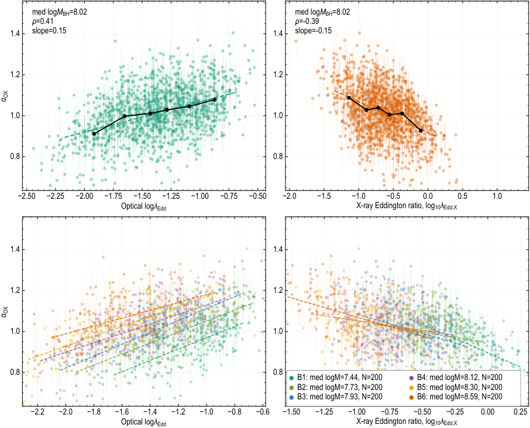
图注：$\alpha_{\rm OX}$—Eddington比平面对估计量的依赖。P3检测似然不低于6的A类宽Hα活动星系核，左列横轴采用光学Eddington比，右列采用X射线Eddington比。上排显示完整样本，黑色连线点为分箱中位数；下排将同一批源按黑洞质量分成六个等数量箱，颜色标质量箱，虚线为各箱的线性拟合。浅色竖误差棒表示P3通量误差传播到$\alpha_{\rm OX}$的部分。光学估计共享推算$L_{2500}$的连续谱光度而产生正关系；X射线估计使用$k_{\rm bol,X}L_{2-10}/L_{\rm Edd}$，由于$L_X$在相对强度和Eddington比中以相反符号出现，关系反转。混用估计量因此能够产生V形形态。
怎么看这张图：左右是同一批对象，先看符号再看质量分箱；这隔离了坐标更换的作用，不是一组源沿时间从左走到右。误差棒没有覆盖全部质量和总光度系统误差。 同对象估计量替换直接支撑方法学主结论。
来源与置信度：arXiv HTML；source verified；https://arxiv.org/html/2610.10331v1/alphaox_estimator_flip_three_samples.png
图7
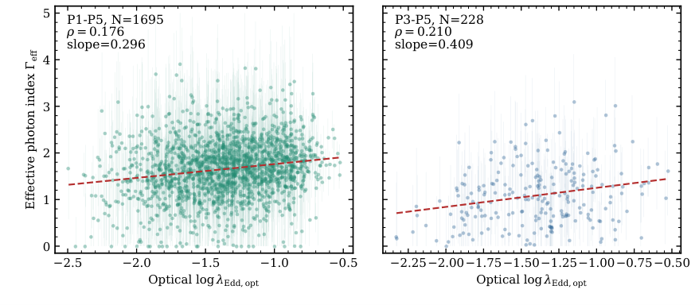
图注：有效X射线光子指数与光学Eddington比。左图为独立选择的P1—P5 A类样本，共1695个对象；右图为292个有限P3—P5拟合中剔除64个下边界解后剩余的228个对象。点和竖误差棒为保存的最佳拟合与剖面$\Delta\chi^2=1$区间，虚线为逐对象普通最小二乘拟合。左右样本不同；同一228个对象的全能段结果见正文和附录B.2。此图不代表光子层面或含响应建模的光谱拟合。
怎么看这张图：不能直接把两侧趋势差异归因于软超出；应先对齐228个对象，并检查保留边界时的结果及分层置换p约0.386。 直观保留替代诊断的选择和响应建模局限。
来源与置信度：arXiv HTML；source verified；https://arxiv.org/html/2610.10331v1/gamma_optical_edd_summary.png
强相关工作
Sobolewska等2011年把X射线双星状态变化缩放到AGN，提供了寻找相对X射线强度转折的物理动机；Ruan等2019年利用变脸类星体寻找相应轨迹。本文并不否认它们的观测，而指出即便用不含总光度修正的UV Eddington比，UV仍进入两个坐标，须核查共享量。上述关联由本文引言和讨论及参考文献核验，本次未独立重分析那些样本。
Steffen等2006年的UV光度—相对X射线强度关系是这里的基础经验关系：它一经投影到光度除以质量的坐标，就会产生质量分层。本文的控制实验与该关系相容；真正检验盘—冕状态还应采用本征X射线谱、软超出、反射和吸收等信息。目录硬度只能是探索入口，不能替代高光子数谱研究。
同一事件 / 同类源线索：
（未提供）
相似工作：
（未提供）
基础理论 / 方法工作：
相反观点 / 张力线索：
4. Toward a complete understanding of the properties of GW190521
- 来源：arXiv / astro-ph.HE
- 链接：https://arxiv.org/abs/2610.09199
- 作者：Aasim Jan, Sophia Nicolella, Aaron Zimmerman, Deirdre Shoemaker, Katerina Chatziioannou, Richard O'Shaughnessy, Muhammed Saleem
- 公告 / 来源日期：2026-10-08
- 阅读层级：重点精读
- 评分：novelty 8/10，importance 8/10，relevance 8/10，final 9.00/10
- 推荐理由：多波形和注入重分析GW190521检验偏心/进动退化，重要但偏心超标定区需严格边界。
中文题目：GW190521的高偏心率解释：先验范围、进动退化与波形边界
做了什么：GW190521在探测器频带内只有少数几个周期，轨道偏心和自旋进动都能改变这段短信号的形状。作者统一分析Hanford、Livingston和Virgo数据，比较多套含偏心、进动和高阶模的波形，并通过改变偏心先验范围及两类零噪声注入，追踪过去相互矛盾的解释从哪里产生。允许5 Hz处偏心率达到0.9时，两套模型支持约0.8的高偏心区域；加入偏心后，对强进动的支持显著降低。
含偏心和进动的TEOBResumS结果为$e_5=0.81^{+0.05}_{-0.01}$，误差是90%等尾可信区间，且后验多峰。该参数按模型自己的定义在5 Hz给出，而数据似然从20 Hz才开始计算。高偏心解已超出通常校准区，两条数值相对论波形的回收只提供局部检验；因此本文支持高偏心解释，尚不能精确确认真实偏心率，更不能直接确定动力学形成的概率。
为什么重要：本文把解释分歧落实到可复现的分析选择：先验截断会完全漏掉远处的高似然峰，而缺失偏心物理可能被进动和质量比吸收。它说明“多套准圆波形都看到进动”并不足以排除共同遗漏同一种物理。关于主星落在约60—130太阳质量成对不稳定质量缺口内的判断相对稳健，次星判断则明显随波形改变。
理论 / 观测 / 仪器方法价值：可借鉴之处是双向注入验证：既注入偏心而不进动的信号，也注入准圆强进动信号，检查分析模型是否把一种效应误读为另一种。再用独立数值相对论信号测试模型外推，而不是只用自身生成、自身回收来证明准确。这套方法适用于所有短暂高质量并合，但应扩展到更多配置和噪声实现。
为什么应该关注：研究多信使关联或并合环境时，质量缺口、动力学捕获和偏心率常被用来支持特定起源。本文提醒这些结论依赖波形、参考频率和天体物理先验，不能把贝叶斯因子当作某形成通道的概率。后续值得关注更高偏心、含进动的数值相对论校准，以及是否有更长的低频观测能打破退化。
展开详细解读：文章讲解、背景、理论、重点章节、图表与相关工作
文章详细讲解
科学问题。 GW190521太重，以至于大部分旋近发生在地面仪器低频截止以下。我们看到的是短暂的末期信号，许多不同轨道都能产生近似的几个振荡。轨道偏心改变每次近心通过时的辐射，自旋进动改变轨道平面相对视线的方向；两者都可能调制振幅和相位，必须在允许两种机制的模型中检验。
作者怎么做。 作者使用RIFT贝叶斯参数估计，统一4秒数据、512 Hz采样和20—224 Hz似然频段，分别分析偏心自旋对齐、准圆进动以及偏心加进动假设。除跨模型比较外，又把同一模型的偏心上限从0.4逐步放到0.9，以区分模型差异与参数空间没搜到。然后用最佳拟合配置作零噪声注入，再追加两条高偏心数值相对论波形检验。
关键结果。 完整范围的TEOBResumS和IMRPhenomTEHM都在$e_5$约0.8附近取得高似然；限制到0.4时，两者会像受限的SEOBNRv5EHM一样给出几乎无信息的偏心后验。在TEOBResumS内部，偏心对齐相对准圆进动的对数贝叶斯因子约2.6，在IMRPhenomT家族约4。允许偏心后再加入进动没有显著改善，说明先前的部分进动证据可能是遗漏偏心的补偿。
局限和下一步。 能生成高偏心波形不等于经过充分校准。两条数值相对论注入中，一条回收后仍允许接近零偏心，且两套偏心定义与参考频率不同，不能直接比较数值偏差。作者也明确高偏心在动力学种群中可能罕见；贝叶斯因子须结合形成通道的先验赔率。需要扩大注入覆盖、校准高偏心并合及处理真实噪声，才能把当前条件证据转化成稳健天体物理结论。
关键结果是怎么做出来的
先核对共同分析基线。三台仪器的噪声功率谱取自LVK同一发布，质量先验在探测器框架分量质量上均匀；进动模型用自旋大小均匀、方向各向同性，对齐模型投影同一个自旋分布。偏心与异常角采用各波形原生定义的均匀先验，不能把这些选择误称为天体物理形成种群先验。
图1展示先验截断的效应。TEOBResumS和IMRPhenomTEHM可以计算到0.9，而SEOBNRv5EHM在较高偏心处发生生成失败，故只用0—0.4。把前两者也截到0.4后，它们得到相似宽后验；这排除了“只因某一模型独有结构才出现高偏心”的简单解释。高似然峰位于远端，所以后验没堆到较低上边界也不能证明搜索范围足够。
图2和表1进一步分离偏心与进动。准圆模型多数给出有效进动自旋中位数约0.6；TEOBResumS同时允许偏心时，中位数降到0.31、90%区间宽至约0.08—0.67。最大对数似然从113.4增至116.5是拟合改善，但模型证据还会考虑参数体积，不能把似然增量直接换算为进动被排除的显著性。
图5的偏心无进动注入，在准圆模型中被恢复为显著进动，并出现与真实事件相似的质量比模型差异；反向的准圆强进动注入则没有产生同样的跨模型分歧。这支持“遗漏偏心可造成偏差”这一因果诊断，却不是证明真实信号必须等于该注入配置，因为只测试了少数最优点和零噪声情形。
图6—7以独立数值相对论波形扩大检验。两条波形的质量、自旋和距离大体可回收，但其中一条的距离和次星源框架质量接近后验边缘，偏心恢复也不唯一。质量结论应据图4分别报告：主星处于指定质量缺口的概率在模型间至少约97%，次星从约33%到92%明显变化，不能用主星的稳健性替代次星。
最后查看附录A的窗函数。标准起始渐消持续$1/f_{min}$，会削掉很短的高偏心信号的大量振幅；改为波形时长1%后，偏心对齐分析的距离中位数由约2.1变为4.2 Gpc，源框架主星质量由约116变为96太阳质量。这是实际处理选择造成的显著系统差，需与表中统计可信区间并列理解。
展开背景、理论、公式、模型和章节导读
背景知识
双黑洞通过引力波耗散能量和角动量，通常逐渐缩小轨道并趋于圆化。如果它们在致密环境中快速捕获并合，可能来不及在进入观测频带前完全圆化。因此偏心提供形成历史线索，但其数值必须连同参考频率一起给出：同一系统在较早、较低频率处通常更偏心。
自旋进动来自自旋与轨道角动量的相互作用。即使轨道近圆，轨道平面的方向也能改变，造成观测振幅和相位调制。长信号可积累足够周期来区分不同调制规律；只有几周期时，不同机制容易互相模仿，模型未包含的自由度会被已有参数吸收。
成对不稳定过程会改变大质量恒星的晚期演化，使某些质量范围难以通过通常恒星坍缩留下黑洞。论文采用约60—130太阳质量作为比较区间，但该区间不是没有理论误差的自然常数。对象落在该区间可以提示层级并合或特殊恒星演化，不能单凭此就确认某一形成途径。
探测器测量的是经过宇宙学红移的时间尺度，直接约束探测器框架质量。要得到源本身质量，还要由引力波振幅推距离，再借宇宙学模型估红移。因此窗函数影响振幅时，即使探测器框架质量不变，也能通过距离改变源框架质量；本文附录提供了非常具体的例子。
基础理论 / 方法脉络
贝叶斯推断用似然描述给定参数的信号与数据是否相容，用先验限定允许参数及其权重，再对所有参数归一化得到后验。多峰问题最危险的是根本没有允许或探索到另一座峰：当前区域的后验很平，并不能排除区域之外存在远高的似然。
波形高阶模携带质量比、倾角等信息。本文各模型都保留可用的角指标不超过4的模，但具体模集合不同，且有的模型只支持对齐自旋。因而跨家族差异不能全部解释成单一参数变化；同一家族内加减偏心的比较更直接，但仍受模型外推影响。
有效进动自旋把两个黑洞在轨道面内的自旋组合成一个描述量，便于展示后验，不能完整替代两条三维自旋。偏心进入模型后，该组合量向较小值移动，说明原先的调制不一定需要强进动；宽后验仍允许一定进动，不能写成自旋严格对齐的测量。
零噪声注入把合成信号放入数据并用实际噪声谱加权，但不加入某次随机噪声实现。它隔离平均意义上的模型失配，适合追踪退化来源；它没有评估真实非高斯噪声、偶然涨落或全参数空间的覆盖率。独立数值相对论注入增强检验，但两例仍不是完整校准集。
公式与推导
以下前几式是解释贝叶斯引力波分析的标准教学表达，后面的参数定义和频率关系按本文正文及附录C。设仪器数据为信号加噪声：
$k$标记三台仪器，$\theta$包含质量、自旋、偏心、方向、距离等；这些参数共同产生时域应变，因此不能分别独立拟合后再拼合。
对平稳高斯噪声，频域内积为
$S_n$是单边噪声功率谱；噪声大的频率权重较小。参考频率5 Hz处的偏心是模型参数，不意味着似然真的使用5 Hz观测。
由该内积构造残差似然
最大似然只选最佳参数点；新增自由度可能提高峰高，却占据很小参数体积，因此还需要积分而不是只比较峰值。
后验与模型证据为
$H$代表物理假设与波形处方。改变偏心上限会同时改变积分区域和先验密度；论文的全范围与受限范围比较不能视为同一个模型下不影响证据的纯数值开关。
不同假设的天体物理赔率满足
偏心对齐与准圆进动的$\ln(Z_E/Z_P)$约2.6或4，分别对应约13或55的贝叶斯因子，而非13或55倍的最终形成概率。若高偏心系统先验稀少，结论会随先验赔率改变。
正文使用的自旋摘要量为
平行与垂直相对于轨道角动量，所有自旋量无量纲。它们便于跨模型比较，但不消除参考频率和波形约定的差别。
源框架转换为
本文用Planck15宇宙学从光度距离得到红移。若过度渐消压低模板振幅，拟合可能选择更近距离，从而更小红移、更大源框架质量；这是附录A系统差的传递链。
最后，附录C采用Peters辐射反作用关系
该关系来自轨道平均、弱场的点质量耗散，是选择较早参考频率的近似依据，不是强场并合波形的精确替代。作者以此选择3.4 Hz复查，并得到$e_{3.4}=0.85^{+0.01}_{-0.01}$；它与5 Hz高偏心解相容，但没有解决不同数值相对论偏心定义间的直接换算。
模型拟合 / 应用方法
复现时首先固定三台仪器数据段、采样、噪声谱及似然频段，记录起始波形频率和参数参考频率。作者使用5 Hz起始与参考频率，却只在20—224 Hz比较数据，理由是把偏心定义在更早演化阶段。附录改到3.4 Hz仍得到高偏心，但不能把这当成观测频带延长的结果。
参数先验必须按正文设置，自旋对齐先验由各向同性三维分布投影，距离在共动体积和源框架时间上均匀。不同模型的偏心原生定义也要保存，尤其SEOBNRv5EHM只能稳定算到0.4。本研究没有提供某个统一偏心定义下覆盖所有模型的完整校准后验，避免在同轴曲线上赋予过强精确比较含义。
模型比较分两层：同一家族内先检验物理假设，再跨家族检查系统差。表1中偏心对齐与偏心进动的最大似然几乎相同，证据也无明显偏好；准圆模型的较低峰高不能单独变成发现显著性。表1误差是90%等尾区间，多峰分布用一个中位数和上下误差会隐藏次峰，必须连图1、图3阅读。
拟合后的验证是把最佳偏心无进动信号与最佳准圆强进动信号分别注入，再用所有模型回收。它检查“误认是否可能”，没有给真实事件的误认发生率。最后两条独立数值相对论注入覆盖高偏心，但一条仍多峰、距离接近边缘，因此适合说明有限局部可靠性，不宜称为已经消除波形误差。
技术处理也会改变物理结论。起始渐消只取波形长度1%，防止短波形被标准窗削掉；附录D改变频段到20—500 Hz、重估噪声谱并提高采样后，仍未复现文献声称的独立$q$约0.1峰。该检查显示某些次峰难以稳定恢复，同时也说明数据处理差异影响所有外禀参数，需要保存完整配置和后验而非只转载最佳值。
重点章节 / 结果段落怎么读
- 第二节：先列出各模型允许的偏心范围、模集合和自旋自由度，明确哪些比较公平、哪些受生成能力限制。
- 第三节A—C及图1—2：沿同模型先验扫描理解偏心峰为何被漏掉，再看进动是否仍必要；分开似然与证据。
- 第三节D及表1：把主星与次星的质量缺口概率拆开，检查源框架转换和多峰标记。
- 第四、五节及图5—7：先看双向合成注入，再看独立数值相对论注入的失败边界，避免将局部恢复称为全域校准。
- 附录A—D：检查窗函数、参考频率和噪声谱如何传播到距离、质量与偏心；这些不是可省略的实现细节。
关键图表与解读
图1
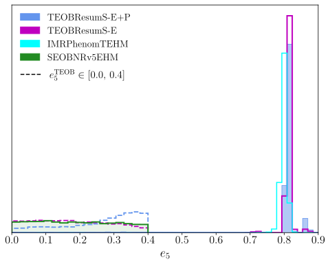
图注：不同波形模型给出的GW190521在5 Hz处偏心率的一维后验分布。模型包括TEOBResumS、IMRPhenomTEHM与SEOBNRv5EHM；TEOBResumS分别展示偏心加进动（E+P）和偏心自旋对齐（E）假设。虚线表示TEOBResumS将偏心先验限制在0—0.4的结果。
怎么看这张图：先比较同模型实线与虚线：漏掉高偏心区域可得到宽而平的后验，并不要求后验堆到截断边界。各模型的偏心定义仍有差别。 直接展示先验截断造成的推断差异
来源与置信度：arXiv HTML；source verified；https://arxiv.org/html/2610.09199v1/eccentricity_comparison.svg
图5
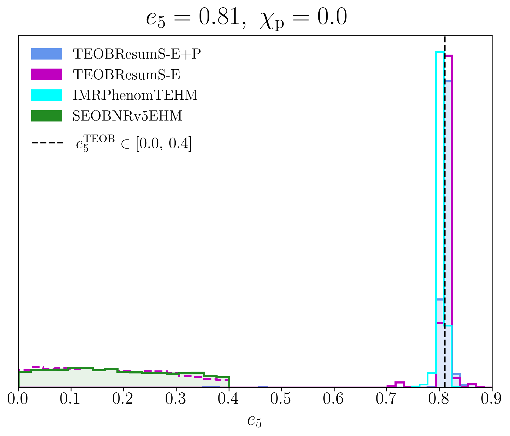
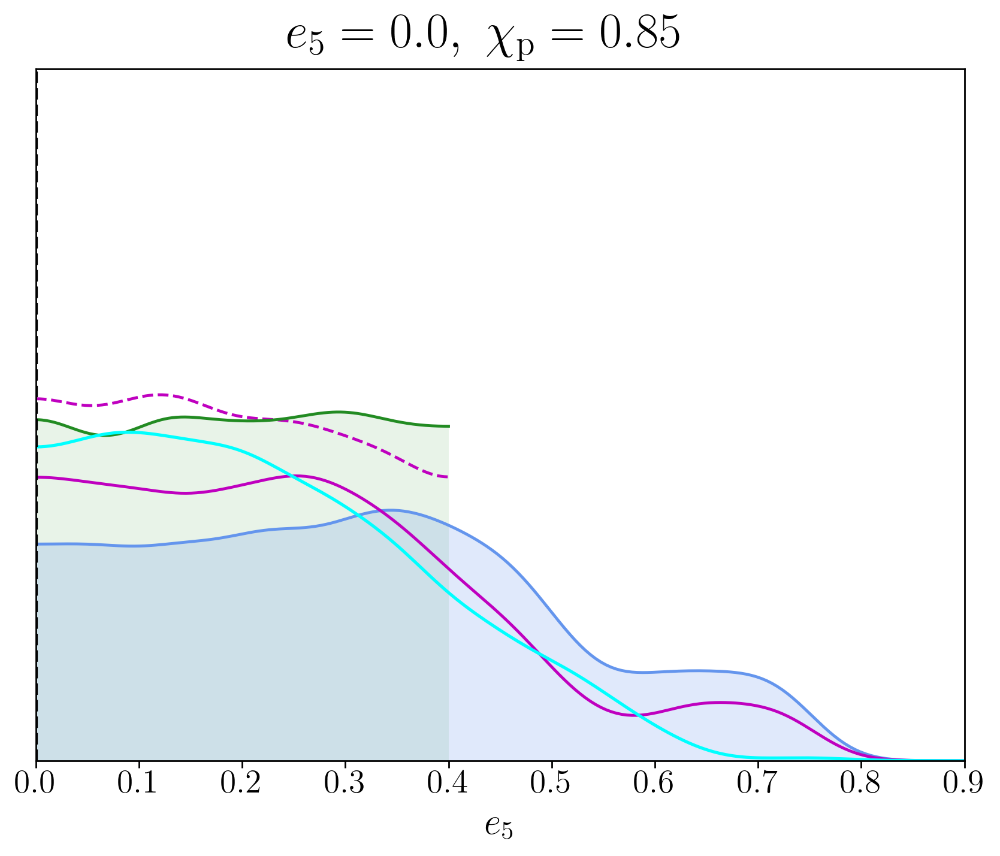
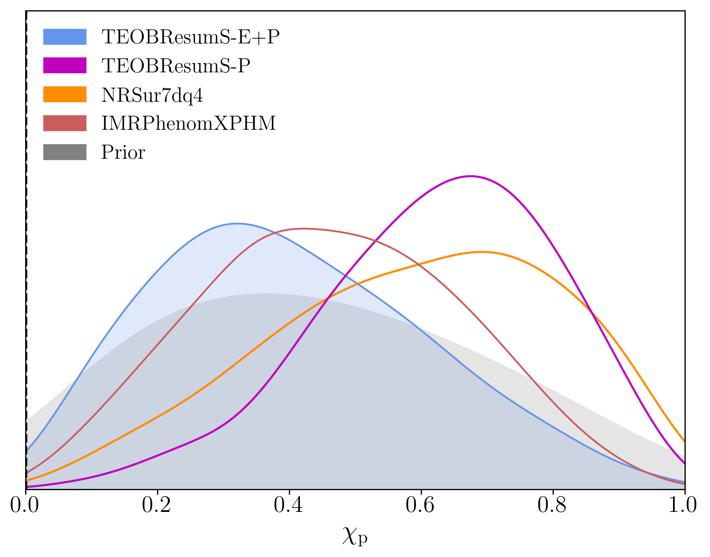
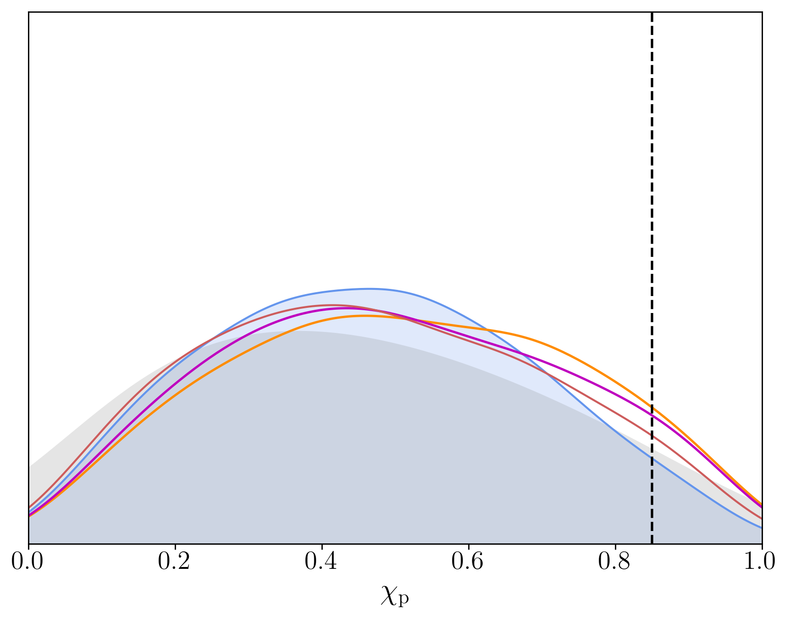
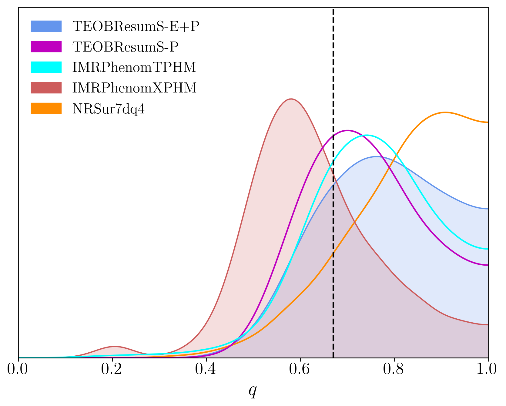
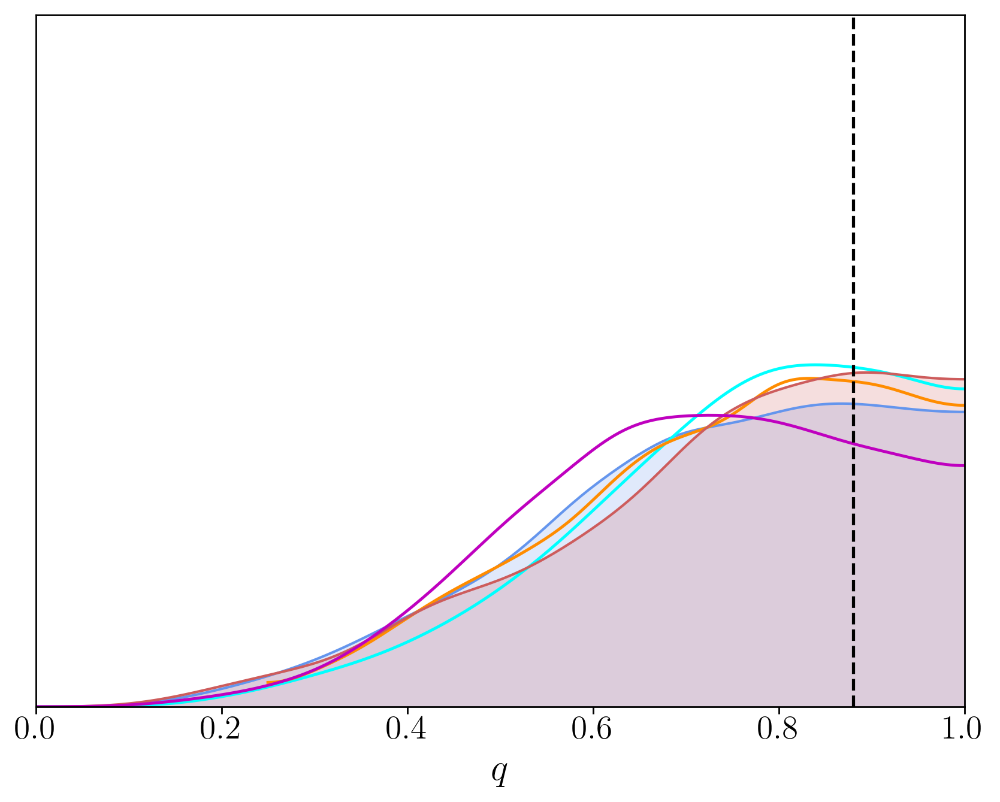
图注：合成数据分析所得后验。左列信号由偏心率0.81的TEOBResumS-E生成，右列由有效进动自旋0.85的NRSur7dq4生成；两次注入均采用各模型拟合GW190521得到的最大似然参数。偏心注入表现出明显波形模型系统差，而准圆强进动注入在模型之间较一致。
怎么看这张图：左右列是两个控制实验。准圆恢复模型可把无进动偏心信号解释成进动；零噪声单点实验不能给出真实事件误认率。 支持遗漏偏心导致系统差的因果检验
来源与置信度：arXiv HTML；source verified；https://arxiv.org/html/2610.09199v1/eccentricity_comparison_TEOBResumS_lnL.png；https://arxiv.org/html/2610.09199v1/eccentricity_comparison_NRSur7dq4_lnL.png；https://arxiv.org/html/2610.09199v1/precession_comparison_TEOBResumS_lnL.png；https://arxiv.org/html/2610.09199v1/precession_comparison_NRSur7dq4_lnL.png；https://arxiv.org/html/2610.09199v1/q_comparison_TEOBResumS_lnL.png；https://arxiv.org/html/2610.09199v1/q_comparison_NRSur7dq4_lnL.png
强相关工作
Romero-Shaw等2020年的GW190521偏心分析（DOI:10.3847/2041-8213/abbe26）使用有限偏心、仅四极模模型和似然重加权，提示偏心但相对准圆进动只有较弱支持。Gayathri等数值相对论比较（arXiv:2009.05461）则曾支持高偏心，却受有限模拟库限制。本文通过统一参数估计、放宽范围和双向注入，把这些差异与搜索空间及物理退化联系起来；并未证明所有历史分歧都由同一个原因造成。
Peters 1964年的两点质量引力辐射演化（DOI:10.1103/PhysRev.136.B1224）是附录C把偏心联系到参考频率的基础。该近似适用于轨道平均弱场耗散，不能替代近并合的数值相对论。本文正是需要后者补足高偏心强场验证；这也解释为何不同频率和不同偏心定义下的两个数字不能直接相减当系统偏差。
同一事件 / 同类源线索：
相似工作：
基础理论 / 方法工作：
相反观点 / 张力线索：
（未提供）
相关简报
1. PEARLS: NuSTAR and XMM-Newton Extragalactic Survey of the JWST North Ecliptic Pole Time-Domain Field V: Unraveling X-ray Spectral Variability
- 来源：arXiv / astro-ph.HE
- 链接：https://arxiv.org/abs/2610.08920
- 作者：Samantha Creech, Francesca Civano, Daniel Wik, Núria Torres-Alba, Ross Silver, Xiurui Zhao, Tonima Ananna, Gibson Bowling
- 公告 / 来源日期：2026-10-08
- 阅读层级：相关简报
- 评分：novelty 7/10，importance 8/10，relevance 9/10，final 9.05/10
- 推荐理由：112源多历元宽带谱量化可变性选择阈值和遮挡时标，对弱AGN总体解释有具体价值。
中文题目：PEARLS暗弱AGN变光：七个候选及不可忽略的检出偏差
问题、方法与结论：作者联合NuSTAR、XMM-Newton和Chandra，对112个硬X射线选择源作多历元谱分析，并补充52个新源的初次拟合。比较吸收柱密度变化与本征通量变化，经参数偏离、模型张力及两套吸收模型交叉筛选保留七个变光候选；数据不足时两种机制仍难区分，没有可靠的变脸事件证据。
意义与贡献：价值在于把暗弱AGN的吸收与冕区变化问题置于巡天选择函数中。高吸收或低态历元可能因计数过低被剔除，平均叠谱又偏向明亮、较少吸收状态；七个候选占比不能直接当总体变光率，观测到的康普顿厚比例也不是内禀比例。
可借鉴之处：利用同时软硬X射线覆盖，再用uxclumpy检查简单模型的候选是否保留，可减少模型误认；对非同时仪器应检查约15%—20%的交叉定标差。样本提示千计数、多次访问有利于检出，但不是普适硬阈值，表4中AGN71只有8个历元。
局限与关注点：低计数Cash统计被近似成卡方来计算张力，显著性未经完整模拟校准；共享历元的时间对也不独立，不能把KS小p值直接当尘环主导的证据。原文严格候选数、对象编号及时间对合计存在前后不一致，本文仅保留七个候选的共同结论；更密集同步观测和泊松级模拟才能量化可靠性。
图8
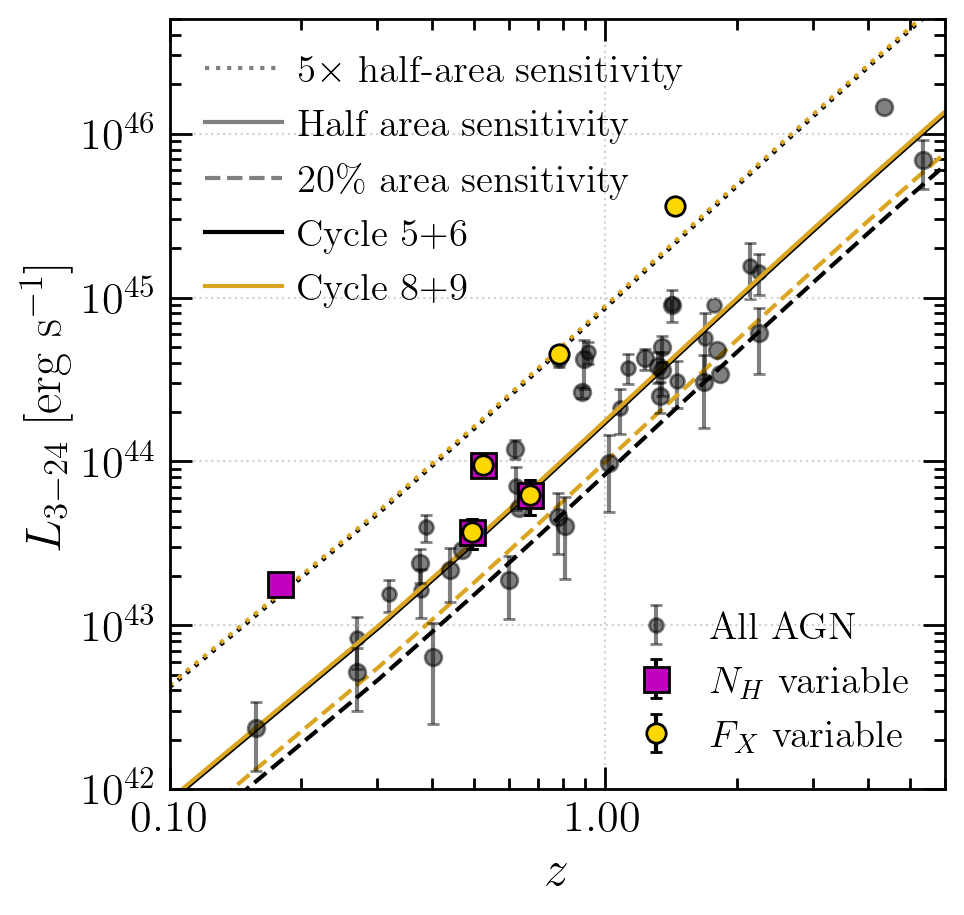
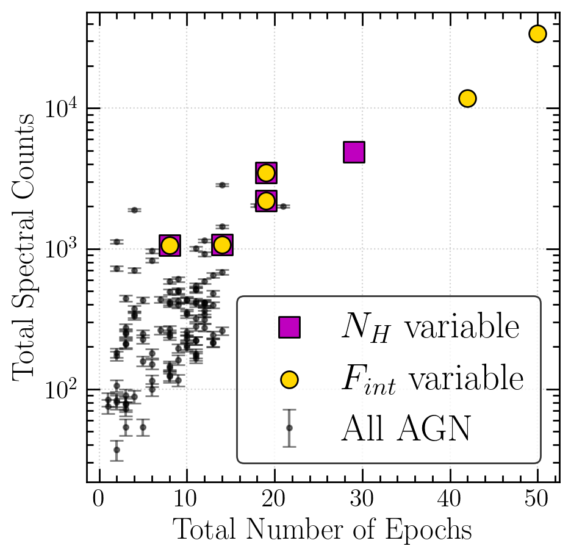
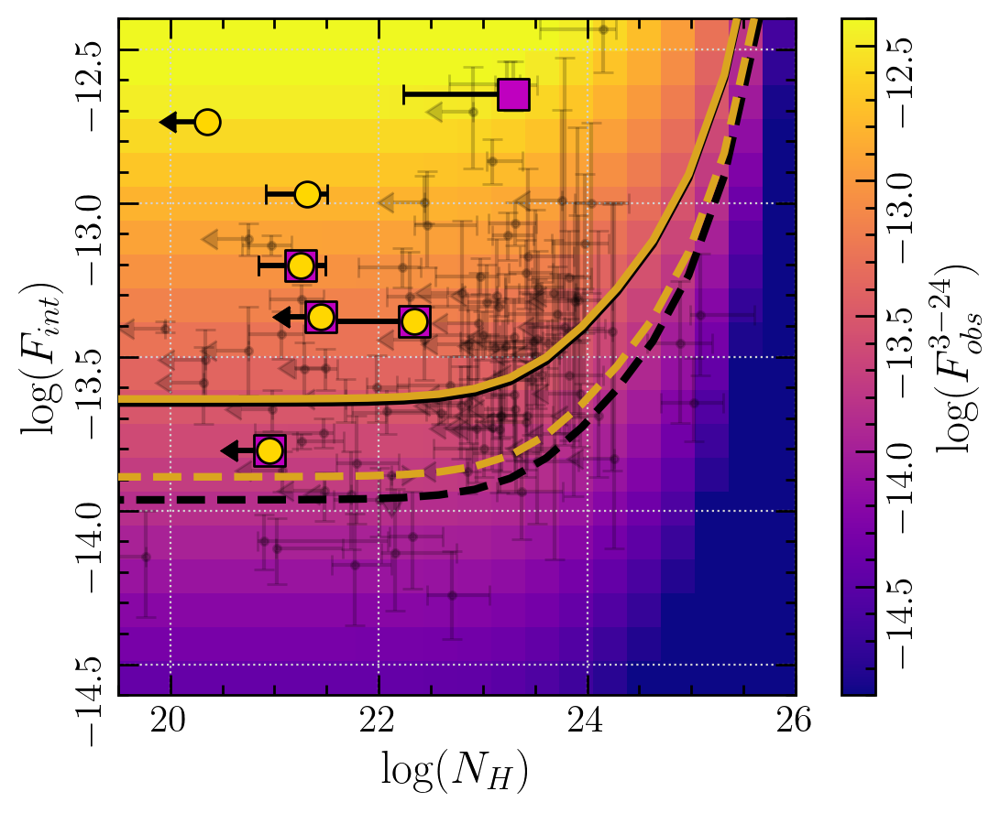
图注：本征通量变光候选（黄色圆点）、吸收柱密度变光候选（粉色方块）与全部NuSTAR样本（黑点）的X射线性质。左：有多波段对应体的源的红移与3—24 keV光度，比较Cycle 5+6（黑线）和Cycle 8+9（金线）灵敏度。中：各源总光谱计数与可用历元数。右：无变光假设下的最佳吸收柱密度与本征通量；背景颜色为预测观测3—24 keV通量，实线和虚线分别表示巡天半面积与20%面积的通量限。
怎么看这张图：先看中图候选偏向计数多、历元多的区域，再看右图暗弱高吸收区容易漏失；不能从候选数直接外推总体发生率。 同时呈现计数、采样与吸收选择效应
来源与置信度：arXiv HTML；source verified；https://arxiv.org/html/2610.08920v1/L_z_3to24.png；https://arxiv.org/html/2610.08920v1/var_v_novar.png；https://arxiv.org/html/2610.08920v1/sensitivity_zbin.png
2. Predictions for Short Gamma-Ray Burst Detections by COSI
- 来源：arXiv / astro-ph.HE
- 链接：https://arxiv.org/abs/2610.08940
- 作者：Eliza Neights, Eric Burns, Nicolò Parmiggiani, Yong Sheng, Savitri Gallego, Aldo Aguilar-Nadalini, Aaron C. Trigg, Sylvain Guiriec
- 公告 / 来源日期：2026-10-08
- 阅读层级：相关简报
- 评分：novelty 7/10，importance 8/10，relevance 9/10，final 9.05/10
- 推荐理由：用飞行触发算法连接响应模拟与短暴种群，给出COSI及引力波联合探测率的可用预测。
中文题目：COSI短伽马暴预测：每年47—89次触发，精定位数量更少
问题、方法与结论：作者把170个Fermi/GBM实测短暴光变和谱配对，模拟2720次COSI观测并通过星载触发算法仿真，再与内禀短暴种群卷积。预计每年触发68次，文中90%范围47—89；满足锗探测器信噪比大于6、据任务要求预计定位到2.5度内的约7—10次。反符合屏蔽的触发能力不能等同主探测器的成像能力。
意义与贡献：该预测把多信使跟进所需的触发、定位和告警延迟分开。假设未来O5灵敏度及两台LIGO各70%在线率，联合事件期望约0.8次/年；加入泊松涨落后为0—3次，且任务时间重叠主要依赖COSI延长期。它不是已实现的探测性能。
可借鉴之处：可借鉴的是保留真实暴的光变—能谱配对，加入地球遮挡、南大西洋异常区及触发后等待下传的损失，再估计实际效率。峰值通量约1.5 photons cm⁻² s⁻¹时触发效率超过50%，口径为50—300 keV。
局限与关注点：背景以首日模拟放大18%近似两年活化效应；效率样本与内禀种群分开，尚未完整传播谱硬度—亮度关联。2.5度定位使用SNR门槛和任务要求推定，并非本文逐暴验证的定位覆盖率；部分种群建模引用尚在准备中的工作，仍需在轨标定和完整公开模型检验。
图8
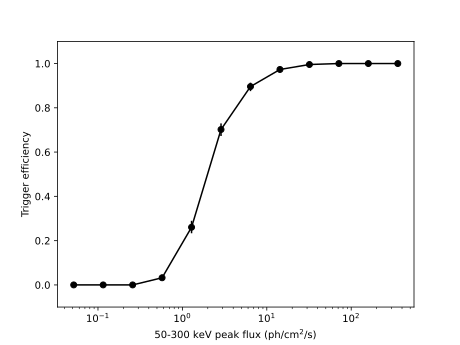
图注：COSI短伽马暴触发效率随峰值通量的变化。50—300 keV峰值通量约高于1.5、2.5和30 photons cm⁻² s⁻¹时，效率分别超过50%、超过75%和达到100%。误差棒为二项分布的1σ不确定度。
怎么看这张图：这是在可见天空且非SAA时的条件效率；全年率还须乘遮挡和在线率，100%仅限模拟覆盖。 决定短暴率卷积的关键仪器效率
来源与置信度：arXiv HTML；source verified；https://arxiv.org/html/2610.08940v1/efficiency_50-300_flux.svg
3. Deep Learning for Cherenkov Astronomy: Performance of GammaLearn on LST-1
- 来源：arXiv / astro-ph.HE
- 链接：https://arxiv.org/abs/2610.10392
- 作者：G. Grolleron, C. Plard, M. Dell'aiera, T. François, V. Pollet, J. Talpaert, S. Caroff, T. Vuillaume on behalf of the CTAO-LST Project
- 公告 / 来源日期：2026-10-08
- 阅读层级：相关简报
- 评分：novelty 7/10，importance 7/10，relevance 10/10，final 9.05/10
- 推荐理由：GammaLearn与LST-1标准分析及真实数据对照，对IACT低能性能直接有参考性。
中文题目：GammaLearn在LST-1实测数据上提升低能灵敏度
问题、方法与结论：作者以电荷和峰值时间相机图像训练γ-PhysNet，比较完整、DVR稀疏保留及严格清洗图像。对2025年9月至2026年2月约6小时、天顶距小于35度的Crab数据，DVR方案在1 TeV以下优于随机森林，约80 GeV处灵敏度改善约三倍，1 TeV以上相容；还能得到约50 GeV、至少3σ的谱点。
意义与贡献：这项会议论文的实用增量是验证从模拟到实测的迁移：模拟中保留更多像素不一定更好。完整图像因大量噪声像素未被准确模拟，实测表现仅与清洗方案相近，说明深度学习性能受背景建模约束。
可借鉴之处：可借鉴的是用最亮三个像素的平均时间作相对基准、时间裁剪和训练时高斯扰动，减少网络利用采集系统的绝对时间及模拟特有结构。训练覆盖天顶角小于38度和多种夜天光背景；移植到LACT前应重新核验像素时序、触发和背景分布。
局限与关注点：结果来自有限Crab样本，作者仍要求更多数据与其他源验证；不能把单点三倍改善外推成全能段或全天空收益。低能信噪比改善有望降低系统误差，但本文并未证明完整系统误差预算已下降。图2才是灵敏度，正文部分交叉引用写作图3，选图按实际图注核验。
图2
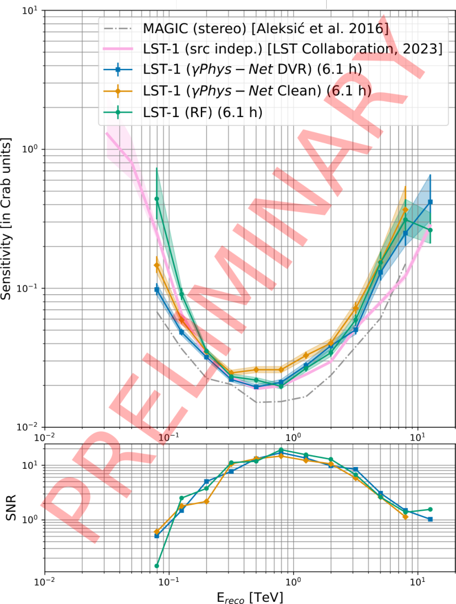
图注：约6小时观测的灵敏度曲线，以Crab星云参考通量百分比表示。随机森林为绿色，γ-PhysNet-clean为橙色，γ-PhysNet-DVR为蓝色；比较MAGIC灵敏度（灰虚线）及LST-1性能论文（粉色）。误差考虑LST-1系统效应。
怎么看这张图：关注低于1 TeV的蓝绿差异，三倍改善只对应约80 GeV附近；比较对象和曝光均应保留。 支持本文关键测量或方法边界
来源与置信度：arXiv HTML；source verified；https://arxiv.org/html/2610.10392v1/sensitivity_curve_allsky-moriond-zd8.png
4. Widespread steep X-ray spectra of luminous $z\simeq5.85-7.5$ quasars and their implications for future X-ray surveys
- 来源：arXiv / astro-ph.HE
- 链接：https://arxiv.org/abs/2610.10522
- 作者：A. Tortosa, L. Zappacosta, E. Piconcelli, I. Saccheo, G. Lanzuisi, E. Bertola, F. Vito, M. Bischetti
- 公告 / 来源日期：2026-10-08
- 阅读层级：相关简报
- 评分：novelty 7/10，importance 8/10，relevance 9/10，final 9.05/10
- 推荐理由：扩展28个高红移类星体后不支持原增长效率相关，直接影响早期AGN普查选择函数。
中文题目：再电离时期明亮类星体的陡X射线谱及巡天计数偏差
问题、方法与结论：作者汇集28个约红移6—7.6的明亮、射电宁静宽线类星体，剔除两例计数不足目标后分析26个光谱，并统一黑洞质量估计。平均光子指数2.40、样本标准差0.38；扩展到较低推定增长效率后，谱斜率与理想化种子质量指标的相关仍不显著，表明陡谱不限于原先最极端增长样本。
意义与贡献：陡谱支持早期盘冕条件与低红移明亮类星体不同，但高光子指数和低截断能量尚退化。固定指数1.9得到的截止参数只是替代谱形描述，不能当独立测得的电子温度；种子质量指标也依赖持续爱丁顿吸积、辐射效率0.1等假设。
可借鉴之处：固定静止系2—10 keV光度后通过仪器响应比较计数，可隔离谱形效应。平均指数2.4在软能段通常只减少约10%—20%计数，硬能段及极陡谱损失更大。此结果有助于构建高红移选源函数，但尚没有加入曝光、背景、PSF和光度函数形成完整探测数预测。
局限与关注点：样本限于极明亮且光子数足够的类星体，不能断言全部早期AGN都陡或不存在弱相关。截止能量的30.0±3.7 keV是截于50 keV的受限均值，并非无穷范围总体平均；质量估计、上限处理、非同时UV/X射线和选择明亮状态均会影响解释。
图9
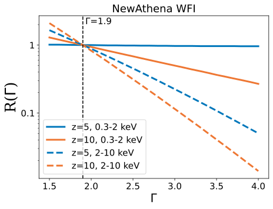
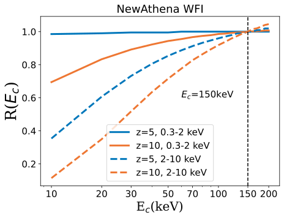
图注：NewAthena/WFI的谱形计数偏差。左：计数率比随光子指数变化；右：计数率比随高能截止能量变化。0.3—2 keV用实线，2—10 keV用虚线；红移5为蓝色，红移10为橙色。更完整曲线见原文图13和14。
怎么看这张图：比较时固定本征2—10 keV光度；不能把计数比直接当漏检源比例，软硬能段的影响也很不同。 支持本文关键测量或方法边界
来源与置信度：arXiv HTML；source verified；https://arxiv.org/html/2610.10522v1/bias_NA_gamma.svg；https://arxiv.org/html/2610.10522v1/bias_NA_Ec.svg
5. Polarised X-ray emission from the accreting millisecond pulsar SAX J1808.4-3658 during an X-ray outburst and a type-I X-ray burst
- 来源：arXiv / astro-ph.HE
- 链接：https://arxiv.org/abs/2610.09477
- 作者：A. Papitto, A. Di Marco, M.C. Baglio, D. Baldi Tomei, C. Ballocco, G. Illiano, R. La Placa, C. Malacaria
- 公告 / 来源日期：2026-10-08
- 阅读层级：相关简报
- 评分：novelty 8/10，importance 7/10，relevance 9/10，final 9.00/10
- 推荐理由：第二个吸积毫秒脉冲星的偏振与爆发候选信号，几何约束有用但相位变化未检出。
中文题目：SAX J1808的持续偏振已检出，热核暴偏振仍待确认
问题、方法与结论：IXPE对SAX J1808.4−3658的2025年爆发衰减测得2—8 keV线偏振度2.9±0.5%、方向46±5度，误差为68%区间。结合NuSTAR时序，15个自旋相位箱未显示显著Stokes参数变化；固定质量半径的双点热点模型偏好热点接近自旋轴，给脉冲轮廓几何提供新约束。
意义与贡献：偏振把辐射几何加入传统强度脉冲分析，可帮助减少中子星质量半径建模退化。本文没有测出新的质量和半径：模型固定1.4太阳质量、12 km，且大热点、盘遮挡和真实康普顿散射尚未完整纳入。
可借鉴之处：值得借鉴的是直接拟合近高斯的I、Q、U，联合相位计时，并扫描倾角检查多极小值。尽管最佳点倾角约60±1度，45—50度和更高倾角仍有接近的拟合谷，不能将局部窄误差当全局精度。
局限与关注点：一次热核暴峰15秒内的2—6 keV偏振度15.5±6.1%、方向近乎正交，仅约2.5σ且低于99%最小可探测偏振18.6%，必须称提示。若以后确认才需要额外垂直散射结构；约22年轨道振荡也只覆盖一周期且拟合失配严重，尚非稳健周期发现。
图2
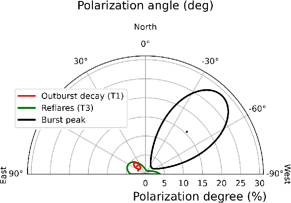
图注：IXPE在2—6 keV测得的偏振参数90%置信轮廓。红色为爆发衰减期T1，绿色为再增亮期T3，黑色为热核暴峰BP。
怎么看这张图：黑色区域提示较高偏振及近正交方向，但暴峰只有约2.5σ，不能据90%轮廓把它升级为可靠发现。 支持本文关键测量或方法边界
来源与置信度：arXiv HTML；source verified；https://arxiv.org/html/2610.09477v1/protractor.png
6. The NANOGrav 15 yr Dataset: Modified Functional Forms for Profile-Evolution Time Delays in Pulsar Timing Models
- 来源：arXiv / astro-ph.HE
- 链接：https://arxiv.org/abs/2610.10431
- 作者：Sofia V. Sosa Fiscella, Michael T. Lam, Olivia West, Ruggero Valdata, Gabriella Agazie, Akash Anumarlapudi, Anne M. Archibald, Zaven Arzoumanian
- 公告 / 来源日期：2026-10-08
- 阅读层级：相关简报
- 评分：novelty 8/10，importance 7/10，relevance 9/10，final 9.00/10
- 推荐理由：Legendre基降低轮廓演化与色散协方差，模拟及11脉冲星验证可用于时序系统学。
中文题目：用Legendre基减轻脉冲轮廓演化与色散的混淆
问题、方法与结论：作者以NANOGrav十五年数据中的11颗脉冲星和模拟数据，比较传统对数频率多项式、逆频率单项式与Legendre展开对轮廓演化时延的描述。Legendre方案通常更接近实测频率—脉冲相位图；一个模拟例中轮廓时延最大偏差下降约85%，色散量平均偏差由0.013降至0.0002 pc cm⁻³。
意义与贡献：推进主要在于分解各物理时延时的数值稳定性。传统模型的较大轮廓时延可被反号色散项抵消，仍拟合出相似总时延；不能据单项异常推翻此前引力波结果。本文也发现相对色散时间变化基本一致，并未直接展示引力波检出显著性改善。
可借鉴之处：将频率转换并映射到有限区间、检查设计矩阵条件及完整协方差，再用已知注入和二维模板作基准，适合精密时序分析。报告绝对色散量时应区分图像形态定出的基准与TOA全局拟合值，不能只看总残差。
局限与关注点：换基不能消除真正不可辨识性：轮廓自身的逆频率平方项仍与色散严格退化。Legendre仅在指定连续平权内积下正交，真实离散异方差采样不保证独立；非整数散射指数和随时间演化的轮廓也会泄漏。85%是特定模拟效果，不是所有脉冲星或GW灵敏度的普适增益。
图12
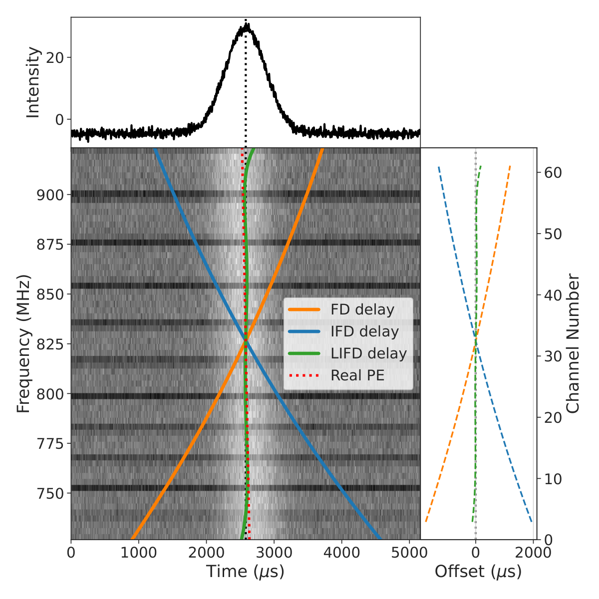
图注：左下：同时注入脉冲轮廓演化和色散时延的最高信噪比模拟观测，经消色散后的轮廓强度随频率和转动相位变化。彩线表示FD、IFD、LIFD拟合的轮廓演化时延，红点线表示实际注入。上方为时间与频率积分轮廓；右侧为各模型时延曲线相对注入曲线的偏差随频率变化。三者中LIFD最接近注入。
怎么看这张图：看右侧绝对偏差而不只看总拟合残差；这一模拟提供可知真值，但不证明低阶物理退化已消失。 支持本文关键测量或方法边界
来源与置信度：arXiv HTML；source verified；https://arxiv.org/html/2610.10431v1/synt_PE_DM_waterfall.png
7. Modeling the nanohertz gravitational wave background with the t-process: Improved frequentist analysis of gravitational-wave power
- 来源：arXiv / astro-ph.HE
- 链接：https://arxiv.org/abs/2610.08906
- 作者：B. E. Moreschi, K. A. Gersbach, G. Shaifullah, S. R. Taylor, A. Sesana
- 公告 / 来源日期：2026-10-08
- 阅读层级：相关简报
- 评分：novelty 8/10，importance 7/10，relevance 9/10，final 9.00/10
- 推荐理由：真实种群注入显示t过程改善频谱精度和各向异性检索，需核验覆盖率和频率选择。
中文题目：用t过程谱模型改善脉冲星计时阵列的逐频推断
问题、方法与结论：作者模拟100组超大质量双黑洞种群，比较幂律、逐频自由谱和允许单频偏离幂律的t过程模型，再将谱后验送入逐频最优统计量。t过程给出的谱误差中位宽度比幂律小43%、比自由谱小26%；对注入真值的准确度改善则只有约2.1%和7.4%，应区分精度与准确度。
意义与贡献：有限强源会使实际引力波背景偏离平滑幂律。允许这种谱起伏，有助于各向异性检验和挑出值得搜索的频段，但本文没有发现真实连续引力波源。符合单频p<0.01且定位距最强注入源18度以内的频段为12、8、1个，分别对应t过程、幂律、自由谱。
可借鉴之处：可借鉴其先估计公共红噪声谱，再传播谱后验至空间相关统计量的做法，并同时报告区间宽度、真值偏差与定位表现。模型选择要用已知种群的注入检验校准，不能仅追求更大的信噪比或更尖锐的天空图。
局限与关注点：所有种群使用同一白噪声实现、规则采样和100颗理想脉冲星；尚无真实红噪声、色散及频谱泄漏。贝叶斯部分采用无空间相关的公共红噪声及变分近似。各向异性p值来自500组零假设，分辨率0.002，未校准跨频全局试验；定位比例受显著频段筛选影响，图本身并未显著变好。
图4
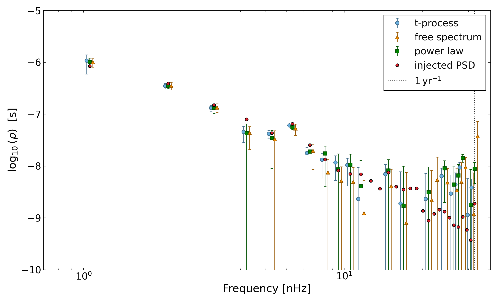
图注：对与图3相同的超大质量双黑洞种群实现，采用PFOS工具计算的引力波背景功率谱密度。每个模型在每个频率箱给出一个谱估计及其不确定度，三者并排展示。为使图更清楚，同一频率箱的三个点在横轴上略微错开；它们实际都在相同的傅里叶频率 fⱼ=j/T 计算。
怎么看这张图：比较同一频率箱的区间宽度与注入谱，不要把视觉错开的横坐标解释为不同频率。 支撑本文核心证据并显示适用范围
来源与置信度：arXiv HTML；source verified；https://arxiv.org/html/2610.08906v1/figures/pop1024_pfos.png
8. Wave-Growth-Limited Particle Confinement in a Near-Parallel Interplanetary Shock Observed by Parker Solar Probe
- 来源：arXiv / astro-ph.HE
- 链接：https://arxiv.org/abs/2610.10067
- 作者：A. Kouloumvakos, I. C. Jebaraj, M. A. Malkov, G. D. Berland, M. Gedalin, N. Wijsen, C. M. S. Cohen, O. V. Agapitov
- 公告 / 来源日期：2026-10-08
- 阅读层级：相关简报
- 评分：novelty 8/10，importance 7/10，relevance 9/10，final 9.00/10
- 推荐理由：PSP原位谱折叠与逃逸各向异性连接自激波增长，跨尺度加速参考强但准线性反演条件突出。
中文题目：Parker探测到太阳激波上游质子束缚与逃逸的能量分界
问题、方法与结论：Parker Solar Probe在0.24 AU处穿过2023年3月13日高速近顺行激波。作者联合质子能谱与俯仰角分布，识别约2—5 MeV的束缚—逃逸过渡；激波到达前，谱折叠能量由约6降至1.5 MeV。将其时间变化解释为波增长所需时间，与前驱区对流时间相交得到约2.46 MeV的特征能量。
意义与贡献：这把粒子能谱的弯折与方向分布联系起来，支持有限时间内自激散射波不足以束缚高能粒子的图像。它检验的是局地传播和散射限制；折叠能量并非加速最高能量，不能与约15 MeV的高能滚降混为一谈，也不能直接外推成超新星遗迹的PeV截止。
可借鉴之处：方法上可同时比较能量依赖的各向异性、谱特征随时间的漂移和独立物理长度。必须标清航天器、等离子体和激波参考系，并用平滑、拟合窗口和能道选择的重采样评估系统误差，避免把处理参数选定后的误差条当完整不确定度。
局限与关注点：波增长时间是把同一组折叠能量数据在均匀增长率假设下反演，非独立测量，稳态扩散长度变化也可能参与。早期数据系统误差可达约35%—38%；仪器在过激波后约3分钟饱和，使下游检验很短。准线性、近稳态和小各向异性近似有范围限制，作者识别的共振散射也不等于已验证Bell非共振放大。
图5
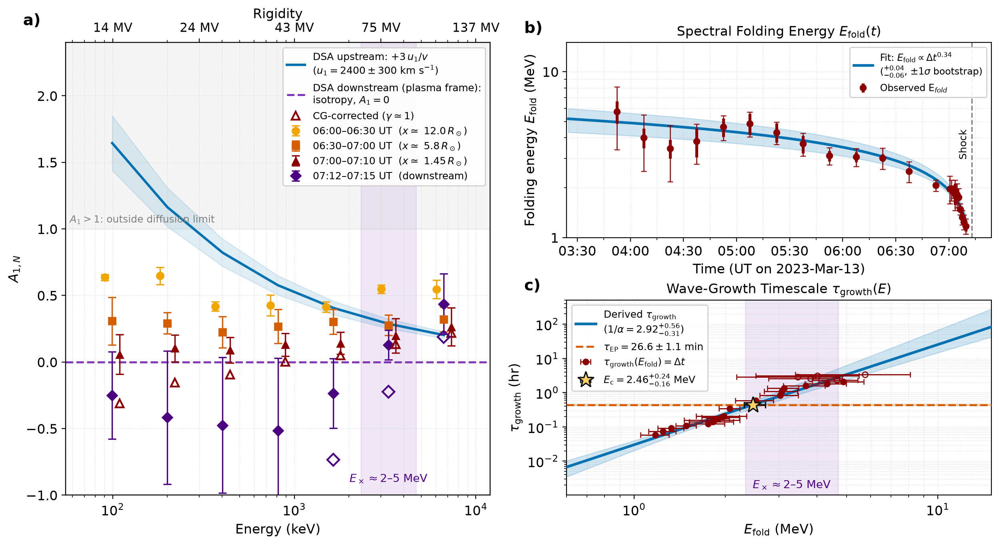
图注：俯仰角各向异性及波增长时间反演。（a）一阶各向异性 A₁,N 随质子能量变化，上轴为磁刚度。彩色实点表示EPI-Lo三个上游窗口和一个下游窗口的观测值；空点表示近激波上游及下游经Compton–Getting修正到等离子体参考系的值。蓝实线为上游扩散激波加速上限3u₁/v，紫虚线A₁,N=0为下游稳态各向同性参考；灰区表示上限大于1、小各向异性扩散近似失效。紫色带标出约2—5 MeV的束缚—逃逸过渡，包围航天器系中下游各向异性变号。（b）观测折叠能量的时间变化，红点内误差为统计误差，外误差合并统计与系统项；蓝线为随到激波剩余时间的幂律拟合，带为bootstrap的68%区间。（c）由增长时间反演得到的能量关系，红点是（b）数据重写为折叠能量与剩余时间的配对；蓝线为均匀波增长率下的反演，带为68%区间。橙虚线为前驱区对流时间，星号为两时间相交处的特征能量。
怎么看这张图：（c）由（b）重写而来，不能作为独立证据重复计数；先看（a）的参考系与符号变化。 支撑本文核心证据并显示适用范围
来源与置信度：arXiv HTML；source verified；https://arxiv.org/html/2610.10067v1/Theory_Figure.png
9. A Newly Identified Transient Ultraluminous X-ray Source in M31
- 来源：arXiv / astro-ph.HE
- 链接：https://arxiv.org/abs/2610.08918
- 作者：Ferdinand, Murray Brightman, Jean-Marie Hameury, Elias Kammoun, Dominic J. Walton, Matthew J. Middleton, Hannah Earnshaw, Felix Fürst
- 公告 / 来源日期：2026-10-08
- 阅读层级：相关简报
- 评分：novelty 7/10，importance 7/10，relevance 9/10，final 8.70/10
- 推荐理由：新增M31瞬变ULX及反常谱演化，单源和供体识别不确定使科学推进有限。
中文题目：M31第三个暂现超亮X射线源：衰减期谱展宽仍有退化
问题、方法与结论：作者从Swift与Chandra观测识别2021年爆发的M31 ULX-3；按M31距离推算，峰值0.3—10 keV光度约10³⁹ erg/s。八组Swift谱显示随衰减变软，单一展宽吸积盘拟合的温度径向指数由约0.75降至0.5边界；盘不稳定模型可再现主要衰减，特征时间约41—61天。
意义与贡献：通常超爱丁顿吸积的平流在高吸积率更强，此源却在暗下去时给出更低盘指数，因此可用来检验风、康普顿分量与相对论展宽怎样混淆简化盘模型。中子星与恒星级黑洞两种吸积体都仍允许，不能凭拟合较好就确定天体类型或盘结构。
可借鉴之处：可借鉴跨仪器定位、低计数Cash拟合和光变形状交叉约束，并把盘指数—温度的联合轮廓与光度—温度关系一起看。对光学伴星应报告场星偶合概率和选择条件：最近HST候选在亮度筛选下约20%，加颜色条件后约1%，两者都不是已确认伴星的后验概率。
局限与关注点：吸收柱对模型敏感，低盘指数可补偿缺失的谱展宽；光度—温度同时容许平方与四次方，尚不能判别平流。盘不稳定拟合排除了最后一次可能再增亮的Swift点，并预设1.4或10太阳质量。M31事件率约0.18±0.10/年仅由三个事件给出，跨星系监测不均一，不能把表观较低率视为显著环境效应。
图6
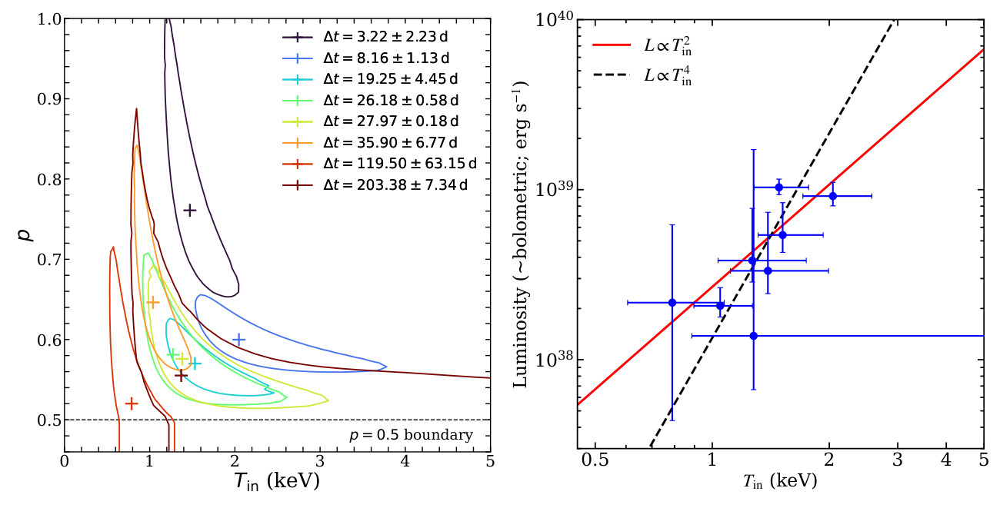
图注：左：diskpbb谱拟合的盘指数p与内盘温度T_in相对MJD 59374后的演化。各Swift/XRT观测的联合1σ置信轮廓对应ΔC=2.30，叉号为最佳拟合；早期观测偏向较大p，晚期接近允许的下界p=0.5，黑虚线表示该人为下界。右：各观测diskpbb模型的未吸收0.001—100 keV近似总辐射光度与T_in，蓝圆点为数据；关系大体同时兼容红实线L∝T²与黑虚线L∝T⁴。
怎么看这张图：观察轮廓是否贴住参数边界；右图目前不能在两种斜率间作出可靠选择。 支撑本文核心证据并显示适用范围
来源与置信度：arXiv PDF；source verified；https://arxiv.org/pdf/2610.08918#page=9
10. Extreme Stellar Death and Galaxy Feedback at z = 2: A Rest-frame Ultraviolet Characterization of the Strongly Lensed Superluminous Supernova 2025wny
- 来源：arXiv / astro-ph.HE
- 链接：https://arxiv.org/abs/2610.08903
- 作者：Willem B. Hoogendam, David O. Jones, Christopher J. Storfer, Luca Izzo, Kyle W. Davis, Miranda Y. Kong, Katie Auchettl, Aadya Agrawal
- 公告 / 来源日期：2026-10-08
- 阅读层级：相关简报
- 评分：novelty 8/10，importance 7/10，relevance 8/10，final 8.65/10
- 推荐理由：强透镜高红移超亮超新星UV和宿主外流资料有价值，但放大率与晚期供能仍有退化。
中文题目：强透镜超亮超新星2025wny的紫外光谱与宿主外流
问题、方法与结论：作者获得红移2.0155的无氢超亮超新星2025wny四个透镜像、七个夜晚的28条KCWI光谱，并结合Pan-STARRS测光与近红外谱。A/C光变比给出A像放大约19.4±1.6；磁星加镍衰变模型可拟合峰后20天内，但不能解释随后平台。宿主窄线显示约575 km/s外流，Lyα逃逸比例估为0.23±0.03。
意义与贡献：强透镜让静止系远紫外谱延伸至峰后约两个月，为比较高红移爆炸与本地超新星提供稀缺样本。弱铁族线遮蔽及低于太阳的环境金属丰度相互支持，但只是单源与少量比较对象，不能推出早期宇宙整体爆炸种群不演化。
可借鉴之处：可借鉴多像光变相互校准、显式分离近峰拟合与晚期外推，以及用低高电离态共同检查丰度修正。宿主静止系应由窄发射线确定后再测吸收线速度，避免把红移偏差误认成外流。
局限与关注点：绝对放大仍依赖C像透镜模型，且早晚A/C比已有约3σ时间变化；微透镜可能影响谱色及发动机参数。镍比例、部分不透明度与中子星质量先验约束占优，磁星拟合可行不等于唯一供能证明。硅丰度−2.05 dex依赖强电离修正，不能把形式误差0.10 dex当全系统误差；Lyα逃逸不是电离连续谱逃逸，本次爆炸也未被证实是宿主外流成因。
图4
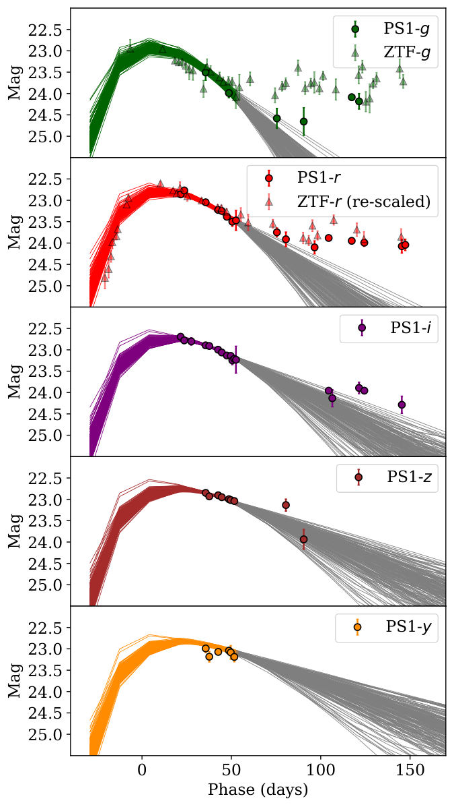
图注：2025wny的Pan-STARRS光变（圆点），实线表示从MOSFiT后验抽样得到的光变实现。ZTF数据（三角形）仅作比较，不用于图中最终拟合；ZTF的r波段已重新缩放以匹配Pan-STARRS。彩线表示数据参与拟合的时段，灰线表示近峰模型向外的预测。
怎么看这张图：重点看灰色外推与晚期平台的系统偏离；这说明该模型缺少晚期成分，尚不唯一指定额外供能机制。 支撑本文核心证据并显示适用范围
来源与置信度：arXiv HTML；source verified；https://arxiv.org/html/2610.08903v1/lc_full_earlymodel.png
11. Can LISA See Inside the Little Red Dots?
- 来源：arXiv / astro-ph.HE
- 链接：https://arxiv.org/abs/2610.08964
- 作者：Samuel Gómez Gómez, Xisco Jimenez Forteza, Carlos Palenzuela, Rosalba Perna
- 公告 / 来源日期：2026-10-08
- 阅读层级：相关简报
- 评分：novelty 8/10，importance 7/10，relevance 8/10，final 8.65/10
- 推荐理由：LRD气体对EMRI波形的环境指纹新颖，但事件率与黑洞质量假设强，尚非可行性确证。
中文题目：LISA能否探入小红点内部：可分辨性受事件率制约
问题、方法与结论：作者计算10—30太阳质量黑洞围绕小红点中心黑洞的四年旋近，比较准恒星、辐射包层、自由落体空腔和共转盘的气体效应。波形失配判据下，致密球对称环境在可探测且微扰有效时有望区别于真空；准恒星需要更近、更轻的宿主。假定10太阳质量伴体，14个高红移JWST对象均不可探测。
意义与贡献：论文把电磁谱形相似的模型转换为近黑洞气体密度和引力波相位的差别，给出可检验的多信使方向。不过“单个事件有诊断力”与“任务期会出现事件”必须分开：采用普通星系核旋近率、10⁵太阳质量宿主，四年约0.08—0.8个10太阳质量伴体事件，30太阳质量伴体约1.5—15个。
可借鉴之处：可借鉴先划分探测阈值、环境分辨阈值与微扰有效域，再与源密度及任务时间相乘。已知近邻31源中30个可测的结论还要求黑洞质量比维里估计小100倍，且每个源恰有所设伴体，绝非30个预报事件。
局限与关注点：只优化并合时间与相位，未拟合质量等退化参数，因此分辨性偏乐观。共转盘只计包围质量，省略迁移力矩，不能概括为盘完全没有效应；自由落体气体却按静止阻力处理亦是上限。采用稠密星团中主要直接坠落的形成率，四年长旋近数降到不足10⁻⁴，主导不确定性是事件供给而非相位计算精度。
图4
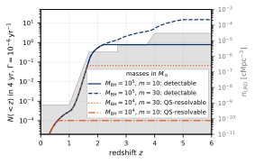
图注：假定每个星系核的多年旋近率为10⁻⁶/年，四年内的累积事件数N(<z)。深蓝线为中心质量10⁵太阳质量、伴体10太阳质量（实线）或30太阳质量（虚线）的可探测事件；每个此类事件也能分辨自由落体空腔。橙线为可分辨准恒星内部的事件，取黑洞与准恒星质量比0.075及最有利的10⁴太阳质量宿主，伴体30太阳质量用点线、10太阳质量用点划线。灰色阴影对应右轴采用的小红点数密度。各自视界以内全部事件计入，曲线在相应范围重合；到达SNR=10视界后变平，四条曲线对应红移约2.2、5.0、1.6和0.6。
怎么看这张图：所有纵轴计数正比于假设旋近率；将普通核率换成稠密星团的长旋近率会大幅压低整张图。 支撑本文核心证据并显示适用范围
来源与置信度：arXiv HTML；source verified；https://arxiv.org/html/2610.08964v1/fig_rates.svg
12. Remnant-wide mapping of heterogeneous presupernova burning histories in the O-rich ejecta of Cassiopeia A
- 来源：arXiv / astro-ph.HE
- 链接：https://arxiv.org/abs/2610.09612
- 作者：Yui Kuboike, Toshiki Sato, Kai Matsunaga
- 公告 / 来源日期：2026-10-08
- 阅读层级：相关简报
- 评分：novelty 8/10，importance 7/10，relevance 8/10，final 8.65/10
- 推荐理由：全文复核保留全遗迹化学异质性新颖性8；积分谱chi2/dof达25—109，部分区域误差仅参考，Ca绑定Ar，模型比较用无权对数残差而非统计判别，爆前与爆炸输运退化未解，重要性8降7，保留简报。
中文题目：Cas A富氧抛射物保留了不同燃烧历史的空间线索
问题、方法与结论：作者使用2004年约1 Ms Chandra数据，对O、Ne、Mg、Si、Fe窄带图像作主成分分析，再拟合20个代表区域的非平衡电离谱。富氧物质从富Ne过渡到富Si且Ne/Mg贫乏，北部与东南分布不同；一维爆前模型中经历较强壳层燃烧混合的结构更像后者，提示前身星燃烧并非各方向一致。
意义与贡献：贡献是把少数结点的核合成线索扩展到遗迹尺度。17—20太阳质量代表相似模型结构所在的网格范围，不能当成各区域独立测出的前身星质量，更不能仅凭形态确认爆前壳合并。
可借鉴之处：先用图像分类定位，再用独立光谱量化元素比例，是可复用的分层分析。PCA分量受温度、电离和吸收共同影响，只是谱形分类；作者用不加权对数残差比较丰度模式，避免少量过小统计误差支配，但该残差不能提供模型置信度。
局限与关注点：积分谱的约化卡方约25—109，部分单区域也失配，误差仅供参考；Ca丰度绑定Ar，所以Ca/Si不是独立验证。爆炸燃烧、视线铁污染和爆后输运均可改变组成，西部缺氧还可能来自强吸收。需要高分辨软X射线分离速度、电离和Fe-L混叠，才能判断前身星结构保留了多少。
图2
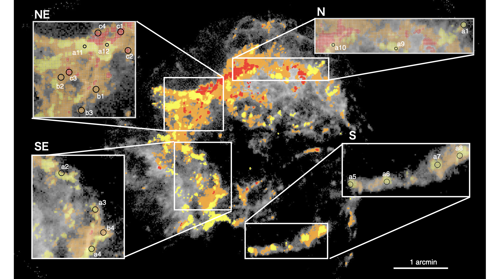
图注：由主成分分析识别的Cas A富氧抛射物空间分布。黄色、橙色和红色分别表示富Si、NeSi及富Ne三类。选取20个区域作光谱分析，a、b、c分别对应这三类，N、NE、SE、S表示北、东北、东南和南部。明亮黄色结点a9—a12采用半径1角秒圆形提取区，其余为2角秒。
怎么看这张图：颜色是窄带谱形类别，须与后续NEI谱拟合配合；不能把颜色直接读成燃烧效率或物质质量分数。 展示全遗迹尺度空间异质性
来源与置信度：arXiv HTML；source verified；https://arxiv.org/html/2610.09612v1/CasA16region.png
13. Dynamical pairing in gravitational wave populations
- 来源：arXiv / astro-ph.HE
- 链接：https://arxiv.org/abs/2610.09834
- 作者：Fabio Antonini, Aleksandra Olejak, Isobel Romero-Shaw, Matthew Mould
- 公告 / 来源日期：2026-10-08
- 阅读层级：相关简报
- 评分：novelty 8/10，importance 7/10，relevance 8/10，final 8.65/10
- 推荐理由：有序双体抽样为固定次星质量脊给解析诊断，但观测增强仅初步，尚非形成通道判决。
中文题目：动态组装黑洞并不必然等质量：用固定伴体质量脊作检验
问题、方法与结论：作者将星团中双黑洞组装近似为从同一有效质量库独立抽取两个黑洞，再按大小排序。该假设由主星质量分布确定条件伴星分布，可把质量库中的峰映射为近固定伴星质量的脊。星团模拟大体支持这一形态；259个引力波事件的非参数推断在主星大于约40太阳质量时，显示与伴星约30太阳质量增强相容的初步迹象。
意义与贡献：这一基准纠正了“动态形成就应接近等质量”的过度简化，也解释次星高质量尾为何下降更快。以观测主星尾指数约−3.8代入，预期次星尾约−6.6，与测得约−7的大误差范围一致，因此不等质量或陡降本身不足以确认多代并合。
可借鉴之处：可借鉴以同一样本的主星分布重建条件分布，再检验剩余配对相关，而不先预测整个恒星演化质量谱。固定伴星质量与固定质量比的二维结构，比只比较一条质量比分布提供更多可辨信息；总变差距离可定量检查近似在哪个质量段失效。
局限与关注点：独立同库抽样是待检验假设，不是排序的数学必然。跨金属丰度混合可把高质量端总变差由约0.1增至0.4；低质量数据也偏离该关系。两种非参数结果基于同一事件集、图中90%可信区间较宽，本文未给形成通道的唯一归属或全局发现显著性；星团及孤立双星模型选择仍会改变结构。
图3
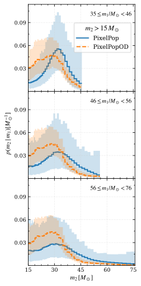
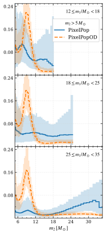
图注：PixelPop与PixelPopOD推断的条件次星质量分布，各面板采用图中注明的分量质量区间。左、右两列分别选取两个分量都高于15太阳质量与都高于5太阳质量的双星。曲线表示后验中位数，阴影为90%可信区间。
怎么看这张图：先比较同一质量阈值下的两种模型，注意它们来自相同事件，阴影重叠不能当成独立观测互证。 支撑本文核心证据并显示适用范围
来源与置信度：arXiv HTML；source verified；https://arxiv.org/html/2610.09834v1/Fig3_H.svg；https://arxiv.org/html/2610.09834v1/Fig3_L.svg
14. Discovery of a second-generation planet candidate accreting onto a white dwarf
- 来源：Nature Astronomy
- 链接：https://www.nature.com/articles/s41550-026-02983-7
- 作者：Jamie T. Williams, Boris T. Gänsicke, Nicholas C. Stone, Detlev Koester, Benjamin D. R. Davies, Christopher Tong, David J. Wilson, Snehalata Sahu
- 公告 / 来源日期：2026-10-05
- 阅读层级：相关简报
- 评分：novelty 8/10，importance 7/10，relevance 8/10，final 8.65/10
- 推荐理由：全文及补充材料复核：Nb谱线首次识别新颖性8，但第二代行星解释缺直接伴星证据；4.4日调制跨扇区不稳定，雾霾解释未自洽，Sr/Nb与核合成模型不符，故重要性8降7，保留简报。
中文题目：白矮星上的铌异常：第二代行星仍是有待验证的候选解释
问题、方法与结论：作者联合HST/STIS、FUSE、VLT/UVES光谱和TESS测光研究年轻白矮星HS 0209+0832，首次在其光球识别5条Nb III及57条Nb IV谱线。大气拟合得到极端铌和镍富集，结合4.399±0.026日、约0.12%光变，提出富集核合成产物的第二代行星蒸发供料候选；这些观测没有直接测出伴星质量、半径或轨道。
意义与贡献：新贡献首先是异常元素组成，而非确认一种行星形成通道。铌相对钙远超太阳比例，普通岩质碎屑解释困难；但由白矮星大气反推供料组成依赖沉降稳态及辐射悬浮，对不同元素不能一概处理。第二代气体包层包住第一代核心的可能性仍未排除。
可借鉴之处：多电离态、多谱线一致性和污染星际线屏蔽值得借鉴。还应将不同TESS扇区分开检验：43与71扇区有信号，42与70未显著检出，注入回收显示后两者灵敏度不足，既不能否定周期，也不能据合并曲线确认长期相干。
局限与关注点：补充材料明确，简单反射或热辐射要用过大行星半径，故另设年轻热行星和昼面雾霾；该雾霾及环流未自洽计算。Sr上限又与所用s过程模型的Sr/Nb不符。极低周期图假警率不是行星确认概率，需持续测光、直接伴星约束及更完整原子数据。论文10月5日发表，列入近期未读。
图2
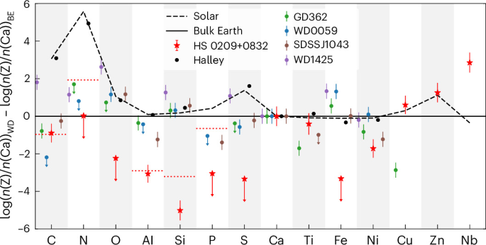
图注：推定母体中各元素相对钙的数目丰度比，并以整体地球组成归一。红星与误差棒为测量值及1σ误差，向下箭头为上限；黑实线表示整体地球，黑虚线为太阳，黑点为哈雷彗星。红虚线表示仅由辐射悬浮预计的光球丰度。另以绿色、蓝色、棕色和紫色圆点分别比较其他白矮星所吸积的类地球、富核、富幔和富冰物质组成。
怎么看这张图：铌相对钙异常是稳健的光谱线索；若母体组成经过选择性流失或污染，这不直接等同完整行星的原始丰度。 显示观测到的特殊化学组成及比较基准
来源与置信度：Nature publisher；source verified；https://media.springernature.com/lw685/springer-static/image/art%3A10.1038%2Fs41550-026-02983-7/MediaObjects/41550_2026_2983_Fig2_HTML.png
说明
评分由 LLM 给出初评，再由本地阈值策略过滤；IACT、TeV 伽马射线和高能中微子天文学按重点方向处理。